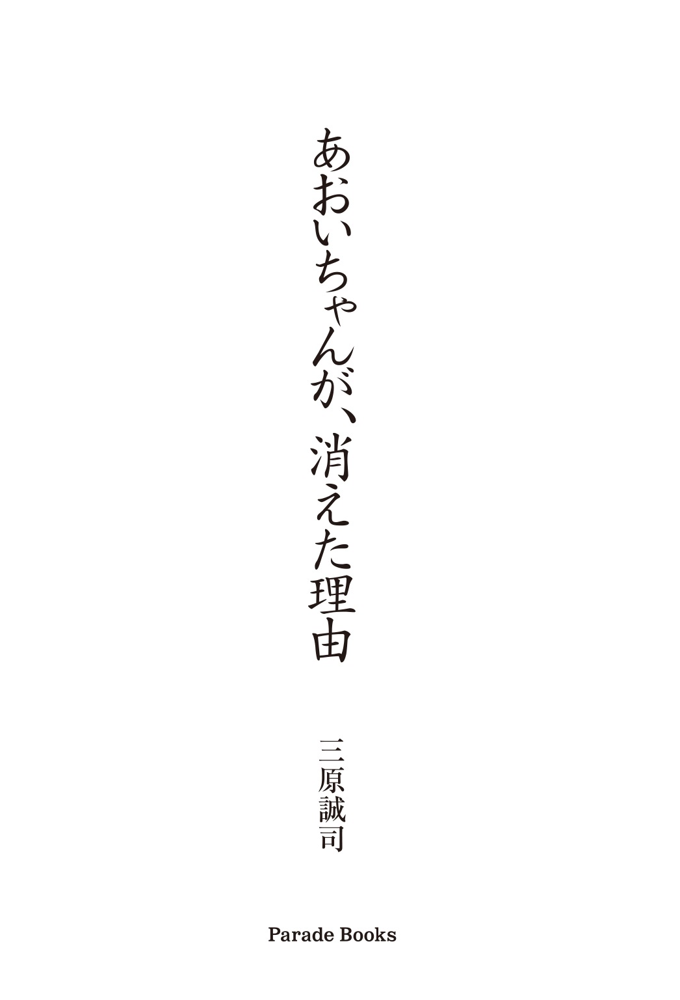

| あおいちゃんが、消えた理由 (PARADE BOOKS) | |
| 三原誠司 | |
| 株式会社パレード (2017) | |

ご注文は
幼い魂
ですか？
私は、ひどく疲れ果て夢を見ていた。
夢の中で私は、暗いトンネルの中を歩いているようだ。
真っ暗で、その少し先、五十メートル程行った辺りに、ひとすじの光が見える。
そこが、トンネルの出口のようだ。
私は、一人の幼い少女に、先 導 をされながら、トンネルの中を歩いている。
私から見たら、その女の子は後ろ向き。
私からすると、少女の背中を見ているので顔までは解らないが、四〜五才位の女の子のようだ。
私の腰くらいの背丈だろうか？
黒いゴシックの可愛いらしいドレスを身にまとい、私の先を歩く。
理由は、まだ不明だがその少女に連れられて、私は暗いトンネルの中をひたすら歩く。
出口付近に、やっと近づき明るい光が差し込み、眩 しくて目を閉じる。
再び目を開けると、そこには一本の河が、横に大きく流れていた。
きらびやかで、大きく広く輝いて見えるその河の向こう側には、綺 麗 なお花畑だ。
赤や青、黄色、色とりどりで河の向こう側の世界は、きっと楽しい世界に違いない。
私は、うつろで、もうろうとする頭の中で、なんとか、河の向こうへ渡れないか考えた。
足下を見ると、少さな二人乗りのボートがあり、少女が先に乗り、私に「乗って」と、片手を差し出した。
「やっと楽になれる」
「あの、お花畑でゆっくり休憩しよう」
私は、そう思いその幼い少女に言われるまま、ボートに乗ろうとしたその瞬間、後ろから「待って！」と、大きな声が聞こえた。
あまりに大きな声にびっくりして私は目が覚めた。
ハッと、天井を見上げた。
そこは、見知らぬベッドの上、見知らぬ天井だった。
さて、私の名前は「石谷あおい」。神奈川県内の高等学校に通っている、普通の女 子 高生だ。
まあ、普通なんて言っているが、どんな事が女の子らしいとか、どういうのが女子高生らしいとか、自分でもよく解らない。
子供の頃はよく「もっと女の子らしくしなさい！」と、叱られたもんだ。
まわりの友達からは、「男っぽい」とか、よく言われる。そのせいか、昔から女友達より男友達の方が多い、今もそうだ。
男の子のグループの中に、ごく自然にまぎれ込んでいたりする。
だからと言って、特定の彼氏などいる訳もなく、恋愛なんかとはまるで無縁。
これまでも、変わった出来事もなく、何気に、平和に過ごして来た。
そんな私も、来年で高校三年生になる。
卒業した後、どうするかとか今は、まるで決めていない。
まわりの友達は、大学へ行くとか、就職をするとか話し始めているみたいだけど、もう来年の話なのに、私はまるで決めていない。
帰宅部なのに、毎日を過ごすのが精一杯。
未来に対しての不安が、ないと言ったらうそになる。
なるべくそんな事は考えない様にして、今を楽しく生きる事にしている。
「今日もパンがうまい！」
これが私の口ぐせだ。
そして、私と一番仲の良いのが、男友達で同じクラスの「加賀見新一」くん、やせ気味で背も高く、いわゆるイケメンてやつ。
小学生の頃から、ギターを習っていて将来は、ミュージシャンになるのが夢だと、私によく話してくれる。
もちろん、加賀見くんに想いを寄せる女の子は、少なくない。
私もその中の一人。
今はまだ、新一くんと付き合っている特定の女の子は、いないようだ。
私も、新一くんにとって女友達の一人にすぎない。
そしてもう一人、仲の良い男友達が、「渡 部 曜 」くん。新一くんと曜くんが元々仲が良い事もあって、私ともいつの間にか、自然に仲良くなっていた。
曜くんは、スポーツマンで無類のサッカーファンで、ワールドカップ等開催している時期は、毎日深夜までテレビに釘 付けになっている様で、目を赤くさせ、スポーツ新聞も学生カバンに忍ばせているみたいだ。
この二人が並ぶと、なかなかの絵になる。
クラスのムードメーカー的存在だ。
もちろん、女友達も当然いる！ その中で私と一番仲が良く、いつも一緒にいるのが、中学生の頃からの友人、「鈴 羅 真 姫 」ちゃん、「れいら」なんて名前だが生粋の日本人。
鈴羅ちゃんとは、中学一年生の頃に知り合ったが、その頃はそんなに意識とかもなく、鈴羅ちゃんの人見知りもあり、話す機会もなかったが、ある日「同じアニメのファン」という、共通の趣味が見つかり急接近した。
今やお互いの家を行き来する、家族ぐるみの付き合い。
鈴羅ちゃんは、スラッと髪の毛が長く、おしとやかで、時に負けず嫌いで、私とは正反対の性格の持ち主。
私はいつもけんかっ早くて「男まさり」とか、よく言われるのだが、鈴羅ちゃんがけんかとか、まるで想像が出来ない。
女の子同士の友達って、一見仲が良いように見えても、お互いの本音は表に出さない。
特に同じ男の人を好きにでもなったりしたら、表向きは仲が良くても、実際は心の探り合いで、殺伐としたりするものだが、鈴羅ちゃんとは違う。
ま、心の探り合いなど無くても二人はお互い、以心伝心出来ている。私はそう思っている。大げさではなくて、二人はもっと昔、子供の、幼い頃から知り合っていたのではないかって、思う時がたまにある。不思議なもので、私は子供の頃を覚えていない......。
そして、鈴羅真姫ちゃんと仲の良い友達が、転入生の「津島海実」さん。
海実さんは家庭の事情で、私達の通う「武蔵小杉Ｍ学園」に、編入して来た。
鈴羅ちゃんとは、よく一緒にいるのを見かけるが、実際私は、海実さんの事はよく知らない。
海実さんと鈴羅ちゃんが、なぜ仲良くなったのか私にはよく解らない。
大きな声では言えないけど、私は海実さんの事をあまり好きになれない。
理由は解らないけど、生理的に合わないのだ。
津島海実さんは転入生という事もあり、まだクラスに馴 染 めていないのもあるかも知れないけど、どちらかと言えば〝浮いた存在〟だったりするのだ。
いつも間に、鈴羅ちゃんがいてくれるから、海実さんと、話せているだけで恐らく、二人だけで話をした事は、一度もない。
そんな五人、
石谷あおい
鈴羅真姫
加賀見新一
渡部曜
津島海実
この五人のメンバーで、高校生活最後の思い出として、「どこか旅行へ行こう」って、話になった。言い出しっぺは私とれいらちゃん、そしてその記念旅行の話に、すぐ様、賛同してくれたのが、アウトドア派でスポーツマンの渡部曜くん。
曜くんと新一くんは元々仲が良かったので、新一くんも一緒にって話になり、その後なぜか、津島海実さんも一緒に参加する流れになった。
どのみち、卒業したら、みんなバラバラになるんだし、今みたいに何 時 までも笑って一緒にいられる訳でもない。
新一くんは卒業をしたら、音楽の専門学校へ行くようだ。曜くんは東京の大学へ行くと言っていた。
鈴羅ちゃんや海実さんも、それなりに決まっているみたいだ。
相変わらず、私は何も決まっていない。
そして数日が過ぎ去り、高校生活最後の、思い出作り、「卒業旅行」が決まった。
行き先は徳島県。
四国地方にある、あの徳島県だ。
最近、「四国萌 え隊」という擬人化アイドルをネットで見付けたのだが、なぜか岡山県も含まれていて笑った。
有名な鳴門のうずしおがあったり、夏の阿 波 おどりが、毎年最高にもり上がり、のべ五十万人という観光客で賑 わうそうだ。
日時は、高校三年の夏休み、約一年後の夏。
この五人の旅行が終われば春にはいよいよ卒業だ。
悔いのない最後の思い出作りをしよう。
少なくとも、旅行に行く前、私達五人はそう思っていた。
五人の最後の思い出作り。
五人の記念旅行。
しかし、これから起ころうとしている不思議な出来事を、今の時点では、誰一人予測出来る者はいなかった......。
私は、加賀見くんと帰り道が同じという事もあり、一緒に帰る約束をしていた。
当然の事だけど、私と加賀見くんは、特別な関係にある訳じゃない。あえて言うなら〝気の合う友達〟なのかな？
加賀見くんも私を〝女の子らしい〟なんて思っていないだろう。一人の友達にすぎない。
鈴羅ちゃんが、加賀見くんの事を実は好きみたいで、最近よく相談を受けるが、今の所進展はないみたいだ。
校門から少し離れた場所で、加賀見新一くんの後ろ姿を見付けた。
相変わらず格好よくオーラがある、その中にどこか、孤独感もある。
「こんばんは」
寂し気な？ 加賀見くんの背中に声をかけた。
加賀見くんは、ふり返り私を見て、
「なんだ、あおいか？」と言った。
「ちょ、あおいかって、女の子に向かって、なんだはないでしょ？」
私は笑いながらそう言ってから、
「やっぱり私の事、女の子として見ていないでしょ？」
とか言いながら、私は新一くんの鞄 の中からのぞくＣＤのアルバムに目が行った。
加賀見くんの頭には、ヘッドホンが付いている。
何か音楽を、聴いていたのかな。
「新一くんてＣＤ派なんだ？ ところでどんな曲聴いているの？」私がそう聞くと加賀見くんは「おう、これか？」と言って、鞄の中からアルバムを出し、見せてくれた。
まあ見せてもらっても、複雑な横文字が並んだバンド名なので、何と読むかも解らない。
私は新一くんの隣を歩きながら、「へえ〜、新一くんこういうの聴くんだ？」と、ＣＤを眺めながら言った。
すると新一くんは「よかったら聴いてみるか？」と言って、私の頭にヘッドホンをかぶせた。
「............」
「お〜っ、何かいい感じの曲だね、メロディアスで聴きやすくて、私こういう曲好きだな」
と、言うと新一くんはこう言ってくれた。
「来月、このバンドのライヴがあるんだけど、気に行ったのなら、俺と一緒に行くか？」
「えっ？ 私なんかでいいの」
誘ってくれたのは嬉 しかったが、いちおう遠慮してみる。
加賀見くんと出掛けたいと思っている女の子は多いのだ。
私と新一くんが仲が良いといっても、あくまで学園内だけの話で、もちろんプライベートで出掛けた事なんて一度もない。
加賀見くんは「うんいいよ、行こうよ、どのみち一人で行くつもりだったし、行くなら連絡ちょうだい」と、言ってくれた。
「二人でライヴなんて、デートみたいだね」
私は新一くんの隣を歩き笑いながら言った。
そんな話をしていたら、新一くんの家の前に着いたので、そこで別れた。
私の家は、その先の小杉十字路交差点の角にある一軒家だ。妙に庭が広くて砂場もあり、子供の頃に乗っていたと見える、ベビーカーがあった。
昔、子供の頃に自分が乗っていたのだろうか？ あまり覚えていない。
「新一くんと二人でライヴかあ〜」
私は、いつの間にか、自分でも気付かない内に、ワクワクしながら家路に着いていた。
しかし、その反面不安に思える事もあった。
鈴羅真姫ちゃんの存在だ。
鈴羅ちゃんが、新一くんの事を好きなのは、十分に知っている。
鈴羅ちゃんは内気で、なかなかそれを言い出せない事もよく知っている。
私は、何度も相談を受けた。
その度に私は「早く告っちゃいなよ」と、冷かし半分で言い、笑い合ったりしたものだ。
そんな私が、新一くんと二人で出掛けるとなると、鈴羅ちゃんはどう思うだろうか？
ここ最近は、鈴羅ちゃんとそんな恋愛じみた話をするのも、少なくはなったが、今でも一途に、加賀見新一くんを好きなのは知っている。
まあ、私と新一くんは、恋愛対象にある訳でもないし、あくまで友達同士なので、二人でライヴに行くくらい、特に問題ないと思うが、この事を鈴羅ちゃんが知ったらどう思うだろうか？
とりあえず黙っていよう。
私、石谷あおいは、そう決めた。
私は、旅行の前日の日、近道をしようと偶然、その道を通りかかった。
すると、誰かが一人でベンチに腰かけている姿が目に入った。
私はすぐに解った。「れいらちゃんだ」
しかし、何となく様子がおかしい。
気のせいか、いつもの鈴羅ちゃんらしくない。
うつぶせて、心なしか、とても寂し気な感じがした。
──考え事でもしているのかな？
何度も言うようだが、鈴羅ちゃんはとても内気で、なかなか自分の意見を述べられるタイプの人間でもなく、告白など自分から出来る様な人間でもない。
鈴羅ちゃんと、三角関係みたいな関係には、絶対になりたくない。
私は、鈴羅ちゃんの性格を知っているからこそ、今回新一くんと出掛けるのを、黙っている事にしたのだ。
「こんばんは、鈴羅ちゃん今日は一人？」
私は、鈴羅ちゃんの隣に腰を掛け、気さくに声をかけた。
「............」
鈴羅ちゃんは、視線をそらす事なく、うつむいたまま無言で、うなずいた。
この瞬間、私は鈴羅ちゃんが何となく、いつもと違う感じがした。
いつもなら、私が話しかけると笑って返してくれるからだ。
「鈴羅ちゃん、誰かを待っているの？」
私は、更に声をかけた。
「......うん......」
しばらく間があり、うつむいたままで鈴羅ちゃんは小さく答えた。
──やはり様子がおかしい──。
私は、すわり直して、
「家、帰らないの？ 一緒に帰る？」
鈴羅ちゃんは、私の方を見ようともせず首を横にふった。
この時、私の中で嫌な予感が、頭の中をよぎった。
噂 ってものは、不思議なもので、本人はそんなに気にしていなくても、いつの間にか広がっているものだ。特に悪い噂なんかは。
鈴羅ちゃんは、うつ向いたまま、こう返して来た。
「今日は、新一くんと一緒じゃないのね」と。
その声は、小さな声だったが私の耳には、しっかり届いた。でも、その意味は何を言われたのか、理解が出来なかった。
これまでも、こんな空気になった事など一度もなかった。
「鈴羅ちゃん、何か怒ってる？」
私が、そう言いかけると鈴羅ちゃんは、
「私が、新一くんを好きだって事、あおいちゃん、よく知っている筈 でしょ......」
鈴羅ちゃんの大きな声がひびき、目には泪 をにじませていた。
「あおいちゃん、どうして私の知らない間に新一くんと仲良くなっているの......」
と、自分の顔を両手で覆った。
「れ、鈴羅ちゃん......」
私は、言葉をなくしてしまった。
鈴羅ちゃんは、私が思っていた以上に、新一くんの事が好きだったのだ。
「ちょっと、仲良くって、鈴羅ちゃん聞いて、私と新一くんはそんなのじゃないの......、一人の友達としてね......」
私は言った。
新一くんとは、これまで恋愛感情など持った事なかったし、他にも男友達はたくさんいた。
今までそれがあたり前だったので、私は鈴羅ちゃんの気持ちが解らなかったのだ。
気まずい空気が流れ、ほんの数秒が永遠にも感じられた。
二人の沈黙が流れた。
「私、帰るね！」
鈴羅ちゃんは、ふいに立ち上がった。
私をおいて、先に立ち去ろうとする。
「ま、まってよ鈴羅ちゃん、それなら私も一緒に帰るから！」と、私も立ち上がった。
鈴羅ちゃんは、私の前を早足でスタスタと歩きながら、「あおいちゃん、昔から私の事を、応援しているとか言っているくせに、私の知らない内に、新一くんと親密になっていたり、二人で出掛ける約束とかしていたり......」
「ま、待ってよ！ 鈴羅ちゃん！」
私は、先を行く鈴羅ちゃんの背中を追いかけながら必死にしゃべった。
「ねえ、聞いて、私と新一くんはそんなのじゃないの！ 一人の友達としてね、そんな事くらい鈴羅ちゃんだって知っているじゃない」
必死だった。必死だったので周りが見えなかった。
ショックだった。鈴羅ちゃんとは一番といっていい位、仲が良かった筈なのにこんな簡単な事が、鈴羅ちゃんの気持ちが解らなかったのだ。
鈴羅ちゃんは公園を出て、更にスタスタと私の前を歩き始めた。
私は、鈴羅ちゃんの背中を追いかけた。
夢中になって追いかけた。
信号待ちをしていたトラックが、ゆっくりとスピードを増しながら走り始めた。
鈴羅ちゃんは、大きな交差点を渡り終え、信号の色が赤へと変わった。
鈴羅ちゃんは、本当は解っていた。
これは〝嫉妬〟だと、あおいちゃんと新一くんは、昔から仲が良くて兄妹みたいな関係だった。
でもなぜか、意地みたいのが邪魔をして素直になれなかったのだ。
数秒遅れて、あおいちゃんが交差点を渡った......いや、渡ろうとした。
時間が止まったように感じられた。
空が、くるくると回って見えた。
トラックの派手なクラクションが、響いたかと思えば、あおいちゃんの身体は空高く舞い上がり──
再び時間が動いたかと思えば、あおいちゃんの身体は、アスファルトに叩 きつけられた。
ほんの数秒だったが何時間にも感じられた。
つまり、あおいちゃんはトラックに、はねられて気を失ったのだ。
鈴羅ちゃんは、背中であおいちゃんの悲鳴と、けたたましいクラクションの音を聞いたのだった。
「あ、あおいちゃん......なんで......」
ひざから崩れ落ちた。
私は、いつの間にか広い洋風の部屋にいた。
なぜ、ここに居るのか解らない。
誰かと一緒とか、一人で来たとか。
只 、その部屋には、初めて入った筈なのに妙に懐しい感じがした。
その部屋には、大きな仏壇と大きな鏡があった。
体の全体が映る大きな鏡で、観音開きとなっている。
私は、なんとなく、その鏡に自分の姿を映して見た。
私は十八の女子高生だ。しかし鏡の奥に見えたのは、四才位の幼い女の子の姿だった。
──今のは、一体......？──
目が覚めた。
何か、不思議な夢を見た気がするけど......今ひとつ思い出せない。
暗く、長いトンネルの中を歩いている夢だった気がする......
うっすらと目を開けると、見慣れない天井が視界に入った。
それは病院の天井だった。
──そっか！ 確か、鈴羅ちゃんとしゃべっていて、交差点に飛び出して、トラックに、......
救急車は、鈴羅ちゃんが呼んでくれたのだろうか？
途中から記憶がない。
幸い命には別状ないとの話であった。
右手に包帯が、ぐるぐる巻かれていたが大きな痛みはなかった。
看護師さんの話では、大事を取って三〜四日程、入院するとの事だった。
しかし、明日からの五人で行く記念旅行への参加は絶望的となってしまった。
「ま、旅行どころじゃないな......」
私は、再び眠りに就いた。
あおいちゃんは、眠りながら考えた。
この病院へは、誰が運んでくれたのだろうか？ 鈴羅ちゃん？
保険証はどうしたのだろう？
まさか？
記念旅行には、結局石谷あおいちゃんを除く四人で行く事になった。
あおいちゃんが入院した事によって、中止の意見も出たが、あおいちゃん本人が反対をしたのだ。
自分の不注意でケガをしたのに、せっかくの記念旅行を中止なんかにしたら、もっと悔いが残る。
そう思った。
病室の前に、鈴羅真姫、加賀見新一、渡部曜、津島海実の四人が集まっていた。
津島海実が、ドアを開けようとしたが、なぜか立ち止まった。
「うみちゃん、どうしたの？」
後ろから渡部曜が、声をかける。
「だってこれ」と、部屋のドアを指差す。
「普通、ドアの所に患者さんの名前を貼ってあるわよね？ これだと誰が入院しているとか解らないよね？」
確かに、そのドアには、患者の名前を入れるプレートみたいなのはあったが、「石谷あおい」という名前は、そこにはなかった。
「プライバシーの問題とかあるんじゃない？ ここ個室だし」
渡部曜はそう答えた。
ドアを開け中へ入った。
「あれ？ みんな」
あおいちゃんは、元気そうだった。
意識もしっかりしているみたいだし、普通におしゃべりも出来ている。
流石に、動き回るのは無理だが。
鈴羅ちゃんは、ショックが大きかったためあまりしゃべらなかった。
本当は自分が悪く、あおいちゃんに対しての嫉妬だと気付いていたからだ。
意地みたいなのが邪魔をして、あの時あおいちゃんから、逃げてしまったのだ。
「あおいちゃん、ごめんね」
鈴羅ちゃんはあおいちゃんの手を取り、あやまった。
そして、津島海実ちゃんもあおいちゃんの身体を心配していた。
この日を境に、あおいちゃんと海実ちゃんの距離が、縮まった気もした。
海実ちゃんは、普段から自分の事をあまりしゃべろうとしないし、転入生なので詳しく知らない。
他のみんなも、恐らく知らないであろう。
大抵いつも一人でいるみたいだし笑ったりしている姿を見た事がない。
悪く言えば、陰気臭い。
もちろん本人が耳にすると、怒るであろう。私の勝手な偏見だ。
無口でクール、どこかわがまま、そのせいでいつも孤独、そんな子だ。
四人は病室を出て空港へやって来た。
「曜ちゃん気付いてた？」
海実ちゃんがふいに声をかけた。
「気付いてたって、何が？」
「あおいちゃんの部屋、ベッドの所にも名前書いてなかったよ。ドアの方はプライバシーの問題で解らなくもないけど、ベッドの方にも名前書いてないなんて、これだと誰が入院しているとか解らないよ」
「でも、みんな、どの部屋に入院しているとか知っているし、急だったんで間に合ってないんじゃない？」曜ちゃんはそう答えた。
新一くんは、背が高くて相変わらず格好いい、すぐ近くにいるのに中々、話しかけられない、鈴羅ちゃんはそう思った。
あおいちゃんは、病室で大人しくしているであろうか？
事故に遭ったのは自分のせいだ。
鈴羅ちゃんは、あおいちゃんの身体をとても心配をしていた。
あの時、背中であおいちゃんの声を聞いた。
嫉妬を感じ、無視をしてしまった。
クラクションのけたたましい音が鳴りひびいたかと思えば、あおいちゃんは倒れていたのだ。
自分の責任だ。
鈴羅ちゃんは後悔していた。
ま、あおいちゃんは、何ひとつ嫌味も言わずに、笑って送り出してくれた。
あまり悲観するのはやめよう。
逆に、新一くんに、自分の気持を伝えるチャンスではないのか。
鈴羅ちゃんは、前向きに考える様にした。
いや、考えてみると、今まで新一くんとおしゃべり出来ていたのは、間にあおいちゃんがいてくれたお陰だ。
あおいちゃんの存在があったからこそ、新一くんとも自然に、おしゃべりも出来たのだ。
そんな不安と安 堵 が交錯する心境の中、鈴羅ちゃんは、飛行機に乗った。
他の三人も徳島行きの飛行機に乗り、飛び立った。
フライト時間は、あっという間にすぎ去った。
「鈴羅ちゃん、元気ないみたいだけど大丈夫？」隣の席の津島海実が話しかけた。
鈴羅ちゃんは、外の景色を眺めたまま視線をそらす事なく「うみちゃん？ うん、私は大丈夫、ありがとう」
鈴羅ちゃんは、入院中のあおいちゃんの事で、頭がいっぱいだった。
うなずいたり、首をふったりするだけであった。
二人の後ろの席が、曜くんと新一の二人であった。好きなアニメの話でもり上がっている様だ。
いよいよ、徳島空港へ到着した。
車もそれなりに走っている、田舎なのか栄えているのか、よく解らないな。
まわりは、踊りをモチーフにしたオブジェが飾ってあったり、阿 波 踊りのポスターを貼ってあったり、後はすだちを全面的に売り出している。徳島の名産のようだ。
空港もよく見ると「徳島阿波おどり空港」となっていた。
四人は空港を出て、バスに乗った。
バスを乗りつぎ四人は鳴門市という小さな町に到着した。
今回の旅行のリーダーでもある、新一くんが事前に調べ、バスの時間とか段取りをしてくれていた。
今夜泊るホテルや、明日の予定なども加賀見新一が、調べ予定をたてていた。
見た目より全然マメな性格で、細かな所まで気の利く男の子だ。
そんな所が、みんなに好かれる秘 訣 でもあるのだろう。
学校にいる時は、そんなの感じられないが、きちんと、みんなの事を考えまとめてくれているのだ。
バスは、鳴門駅近くのホテルの前で止まった。
この日は、風がきつかった。
都会では、体感する事のない気分であろう。ここち良い風だ。
山々に囲まれて自然でのどかな世界、高い建物も小ないので空が大きく、広く見える。
ホテルは小さなホテルだった。とりあえず今夜はここに一泊して、明日は鳴門公園の方を観光して、自由行動となっている。
鈴羅ちゃんは、この自由行動をなんとか、新一くんと二人に、なれないものか密かに考え、想っていた。
チャンスさえあれば、思い切って胸の内を打ち明け、告ってみようか？
そんな気持ちにもなっていた。
あおいちゃんも祝福してくれるかな？
しかし今日もまだ、新一くんと会話らしい会話はしていなかった。
あいさつをした位だ、鈴羅ちゃんはとても小心者で、自分から中々声をかけられない。
今まで、あおいちゃんが間にいてくれて、あおいちゃんありきで、新一くんとも話が出来ていたのだ。
今になって、入院してしまったあおいちゃんの存在が、ありがたく思い、同時に自分のふがいなさを痛感していた。
「ん？」
新一が、ホテルの入口付近で立ち止まり、ふり返る。
「加賀見、どうした？」
すぐ後ろの渡部曜が声をかける。
しばらく間があり、「いや誰かに見られている気がして......」と、周りを見渡した。
鈴羅ちゃんは、一瞬ドキッともしたが、自分の事ではないようなので、ホッとした。
「気のせいだよ」曜くんは笑 って答える。
鈴羅真姫、津島海実の二人で同じ部屋。
そして、加賀見新一、渡部曜の二人が男子同士で同じ部屋だった。
新一は部屋に入るなり、妙な違和感を覚えた。
部屋そのものに、変わった所は何処もなく、自然な洋風の部屋だった。
鍵を開け、中へ入ると右側にドアがあり、そこはユニットバスとトイレ。
シングルベッドが二つあり、その向こうにソファー二つとテーブルがひとつあった。
しかし、さっきの視線や違和感は何だったのだろう？
加賀見新一は首をかしげた。
海実ちゃんと鈴羅ちゃんも同じ造りの部屋であったが、ひとつ違う箇所があった。
それは、ソファーとベッドはなくそこに、不自然にも、全身が映る位の大きな、カガミが置いてあった。
その大きなカガミは、観音開きになっており、今は開いていた。
この様なカガミは、新一と曜くんの部屋には、なかった。
いや、このホテルの、どの部屋にもなかった。誰かが、持ち込んだのだろうか？
「疲れたね〜」
津島海実は、部屋に入るなり大きなあくびをした。
荷物を置いた鈴羅ちゃんは、少し笑ってその後、部屋の奥にある大きなカガミに気付いた。
鈴羅ちゃんは、その大きなカガミに、何となく自分の姿を映してみた。
「──？──」
まぶしい光が見えた。
「れ、れいらちゃん？」
曜くんと新一は、ホテル内を軽く探検して自分達の部屋へと戻って来た。
「このホテル、うちら以外、誰も泊っていないんじゃないか？」
曜くんの方を見ながら新一が言うと、
「ん、静かだよな。所で加賀見、その紙袋は何？ 何か買ったの？」
新一は、紙袋を持つ右手を上げて、「石谷への土産、忘れない内に買っておいたんだ」
「ガチャ」
新一は鍵をまわし、確かにドアを開けて中へ入った。
新一が部屋へ入り、続いて曜くんが中へ入る。
新一は自分の目を疑う。
「？？？」
目をパチクリさせる。
渡部曜は、後ろにいた為新一くんの背中で確認出来なかったが、なんと四才位の幼い女の子が、ベッドの上に「ちょこん」と、座っていたのだ⁉
ツインテールに、瞳の色が赤く、笑顔の可愛いいニコニコした女の子だ。
「あれっ？ 部屋を間ちがえたかな」
そう思い部屋の番号を確かめた。
──いや、鍵を開けて中へ入ったのだ。
他人の部屋なら、鍵そのものが違っていた事になる。
新一は、もう一度ベッドの上を見た。
今度は、その女の子の姿は消えていた。
「............」
「ん？ 今誰かそこに座ってなかった？」
後ろにいる曜くんに声をかけると、曜くんは、「誰もいないと思うよ」
新一の背中が死角になっていた為、部屋の中が、充分に見えていなかったのだ。
新一は「今、幼い女の子が見えた気がしたんだよ、いや、確かにいたぞ！」
曜くんは、荷物を置きながら「プーッ」と吹き出した。
「加賀見、さっきから変だぞ、気のせいだよ。そんな事言っているから、恋人の一人も出来ないんだぞ」と、笑いながら言った。
新一は、若干、腑 に落ちない表情であったが、すぐに笑って何も言わなかった。
果たして、本当に新一の見間違いなんだろうか？ しかし、あんなにハッキリ見える「妄想」もないだろう。
その日の夜、四人はホテルの一階にある食堂で食事をした。
いなかの為か？ 他には誰もいない様で、ほぼ貸し切り状態、四人掛けのテーブルが、四つ程の小さな食堂であった。
海実ちゃんは、元々小食だったようで、すぐに退席、曜くんも早々と食事を済ませて、食堂を後にした。
「ごちそう様、おいしかったわ」食器を片付け、海実ちゃんが立ち去ろうとすると、「うみちゃん待って、俺も食べ終わったから」
と、曜くんも食堂を去った。
「あいつら二人にしてあげようぜ」
曜くんは、ウインクをした。
食堂には、鈴羅ちゃんと新一くんの二人だけが残った。
曜くんと海実ちゃんは、不思議と気が合ったようで、タクシーで出掛けて行った。
鈴羅ちゃんは、新一くんを目の前にして何を話していいか解らなかった。
好きな人と二人きりになったりすれば、緊張でしゃべれなくなったりするものだ。
でも、二人になれた事は、正直嬉 しかった。
鈴羅ちゃんは、うつむいたまま『どうしよう......何か、話さなきゃ』心の中で思った。
どれ位の時間が、経ったであろうか？
──ダレカタスケテ──
鈴羅ちゃんの、心の叫びが聞 こえたのか？ 先に声を出したのは、新一くんだった。
「もう、食べ終わってる？」
新一くんの声に焦った鈴羅ちゃんは、
「あ、はい！」と、言って、あわてて片付けようとした。
あわてすぎた為、食器をひっくり返しそうになった。
「きゃあ」
新一くんは笑って、「いやいや、そんなに急がなくても大丈夫だよ」と、やさしく言って、自分の食器と鈴羅ちゃんの食器を重ね、後片付けをした。
「地図をさっき見たんだけど、少し歩いた所に海があるみたい。鈴羅ちゃんせっかくだし外を散歩でもしない？」
新一が鈴羅ちゃんを誘う。
鈴羅ちゃんは喜んで、誘われるまま付いて行った。
十分程、歩いただろうか？
広い海岸へ到着した。
広い広い海だ。
時刻は、午後九時すぎ。
海岸には、二人以外誰も居ないみたいだ。
波の音が、邪魔にならない程度に鼓膜をくすぐる。
陽が落ちて、星がきれいだ。
空が、ものすごく広く感じ水平線が遠くに見える。
新一は、何か、考え事をしながら少しうつむき加減で、鈴羅ちゃんの前を歩いていた。
鈴羅ちゃんは、新一の後ろを付いて行く様に歩いて行く。
後ろ姿だった為、新一の表情まで解らなかった。
そしてふいに立ち止まり、
「鈴羅ちゃんは、幽霊とか信じる？」と、聞いて来た。
予期せぬ質問に少しとまどいながらも、
「ゆ、幽霊？ お化けとか、そういう事？」
と、答えた。
すると新一は、「俺、さっき見たんだよ。ホテルの部屋で、小さな女の子の幽霊を！」
その真剣な言い方に、鈴羅ちゃんは「プッ」と笑ってしまった。
「女の子？ 幽霊？ 他の部屋の観光客とかじゃない？ あと見まちがいとか」
「う〜ん、そうかなあ。割りとハッキリ見たんだけどな......」新一はそう言った後、思い出したかのように、
「あ、そうそう」と、内ポケットから一枚の封筒を取り出し、鈴羅ちゃんに渡した。
「⁉ 」
鈴羅ちゃんは、「何」と言いながら、その封筒を開けた。
中には「ＭＳ」というバンドの、ライヴのチケットが入っていた。
鈴羅ちゃんは両手を上げ、
「ハラショー！ 新一くん、これって......」と声を高げ驚いた。
「うん、あおいちゃんが、事故して入院しちゃっただろ？ 代わりに鈴羅ちゃん行かないかなって？」と、鈴羅ちゃんを誘った。
「え、私なんかでいいの？」
鈴羅ちゃんは、いちおう遠慮をしてみた。
すると新一は、「プッ」と吹き出した。
「何で笑うのよ！」
「何でって、あおいちゃんにチケット渡した時と同じ様な反応だったんだよ、お前ら似ているな〜って」新一は笑いながら言った。「そうなんだ、私とあおいちゃん、よく似ているって言われるよ、顔も何となく似ているし、双子みたいだねって」
鈴羅ちゃんは、そう言いながら、そのチケットを受け取った。
「どうもありがとう」
鈴羅ちゃんは、そのチケットを見つめながら砂浜へ座り込んだ。
その隣に、新一くんも座り込んだ。
二人は、その後も一杯おしゃべりをした。
只 、告白までは、いたらなかった。
言い出せなかったのだ。
そして実は、もうひとつ鈴羅ちゃんは、新一くんに黙っていた事があった。
それは、新一くんは「幽霊を見た」と、言っていたが、その幽霊の正体を、鈴羅真姫は知っていたのだ⁉
そして、新一くんには、気付かれない様に小さな声で、そっとつぶやいた。
「堕天使、降臨」と。
私は、ひどく疲れ果て眠り夢を見ていた。
夢の中で私は、暗いトンネルの中を歩いている様だった。
まっ暗で、少し先五十メートル位行った先に、ひとすじの光が見える。
そこが、トンネルの出口のようだ。
鈴羅真姫ちゃんは、一人の女の子の背中を見失わない様に、必死に後をつけていた。
その女の子は、鈴羅ちゃんの前を歩いているので、顔は確認出来ないが見失ってはいけないと、確信をしていた。
鈴羅ちゃんと同じ位の背丈で、年齢も同じくらいであろうか？
その女の子と一緒に、更にもう一人幼い女の子が先導しているようだった。
その二人の女の子は、鈴羅ちゃんがつけている事には、気が付いていなかった。
暗いトンネルの中をゆっくりとぬけ、出口付近に近づいて来た。
光が差し込み、眩 しくて目を閉じ、再び目を開けると、そこには一本の大きな河が流 れていて、その河の向こうには、色とりどりのお花畑が見える。
鈴羅ちゃんの前を歩いている二人の女の子は、その河の向こうの世界へ行こうとしていた。
ふと足下を見ると、二人乗りの小さなボートが浮かべてあり、先に幼い少女が乗り、後から鈴羅ちゃんと同じ年くらいの少女が、ボートに乗ろうとしていた。
鈴羅ちゃんは、その女の子を『河の向こうへ行かせてはいけない』、そう思い、とっさに「待って！」と大きな声を出し、気が付いたら、その女の子の腕をつかみ、引っ張っていた。
目と目が合った
「あ、あおいちゃん⁉ 」
その女の子は、石谷あおいちゃんだった。
目は、うつろで半分眠っているような表情だ。
恐らく、今目の前に誰がいるかも、解っていないであろう。
無意識のまま、ここまでやって来た、いやここにいる、少女に連れて来られたようだ。
鈴羅ちゃんは、あおいちゃんの両腕を取り向かい合って必死になって言った。
「あおいちゃん、私、解る？ れいら、鈴羅真姫、あなたと同じクラスの！ そんなボートに乗って何処へ行くの？」
あおいちゃんは、無表情で状況を把握している様子はなかった。
必死に、あおいちゃんへ話し掛けていると隣にいた、幼い少女が声を掛けて来た。
四〜五才位だろうか？ 黒いゴシックなドレス姿で、まるで少女マンガから飛び出したかのような女の子だ。
「その子、もうすぐ死ぬ予定だから、私が案内人として、あの世へ連れて行くのよ」
その黒いドレス姿の女の子は言った。
びっくりした鈴羅ちゃんは、「死ぬ予定？」「連れて行く？」訳が解らず聞き返した。
その女の子は、
「だってその子、あおいちゃん今日、トラックに、はねられたでしょ？ 結局、助からなくて死んじゃうのよ、私は死神だからあの世まで連れて行く義務があるのよ」
「？？？」
鈴羅ちゃんは、頭の中を整理して、その女の子が言った言葉の意味を、少しずつ理解しようとした。
「死んじゃうって、どういう事？ 馬鹿な話しないでよ！ つか、あなた誰よ！」
と、大きな声で言うと、
その女の子は、意外に落ち着いて、「私？ 私はルビイ、ルビイって死神よ」
「また、訳の解らない事を......だからなんで、あおいちゃんが死んじゃうのよ！」
その言い方は、中々の迫力だった。
「な、なんでって、だからトラックに、はねられて......」と、少女が言い終わる前に、
「ルビイちゃんて言ったっけ？ だったら、私を連れて行ってよ。私が、あおいちゃんの代わりに死ぬわ、いいでしょ？」
突然の訴えに、ルビイと名乗る少女も戸惑っていた。
鈴羅ちゃんは、「あおいちゃんを事故に遭わせたのは、私の責任なの、代わりに私が死ぬから、私を連れて行ってよ！」
必死の訴えに、流石に死神も折れたようだ。
「本当に、それでいいの？」
死神のルビイは、少さく息をして確認をとった。そして、
「解ったわ、あおいちゃんは何とか私が、助かるようにしてあげる。でもあの世とのバランスが崩れちゃうから、鈴羅ちゃん、あなたを連れて行く事になるわ、いいわね？」
「うん」
鈴羅ちゃんは、黙ってうなずいた。
「つまり、あおいちゃんの代わりに、あなたが死んじゃうって事よ、恐らくあと二四時間以内に......」
あおいちゃんは、助かりそうだけど、代わりに鈴羅ちゃんが、二四時間以内に死ぬ事に。
恐らくこの旅行中に......
鈴羅ちゃんは、晴れ渡ったあの世の大空を見上げた。
雲に覆われ、やけに白い大空だった。
ホテルへと戻り、新一と鈴羅ちゃんは部屋の前で別れた。
「新一くん、ありがとう、また明日ね」
「じゃ、」
言葉数は少なかったが、新一くんとお話出来た事が、鈴羅ちゃんは嬉 しかった。
嬉しかったが、その表情は笑ってなかった。
鈴羅ちゃんと別れた新一は、鍵を開けて、部屋の中に入った。
「ガシャ」
さっきもそうだったが、自分の泊っている部屋の鍵を確かに開けて、入ったのだ。
やはり、さっき同様、自分の目を疑った。
疑うというより、はっきりと目の前にその姿は見えていた。
幼い女の子の姿が......。
その四才位の女の子は、ベッドの上に、「ちょこん」と座っていて「こんにちは」と、明るくあいさつをした。
よく見ると、可愛らしい顔立ちをしている。
澄んだ瞳に、長い髪の毛にツインテール、口の中には、小さな八重歯が見えた。
ブランドとか解らないけど、ゴシックで可愛らしいメイドっぽい服を身にまとっていた。
しかし何処から入って来たのだろう？
「こ、こんにちは......君は誰かな？」
新一は、とまどいながらもその女の子に、声を掛けた。
その女の子は、ニコッと笑って
「私？ 私は天使だよ」と答えた。
「天使？ お嬢ちゃん天使なの？」
新一は、笑いをこらえながら聞き返した。
そして、その女の子の衣装を見て、
「お嬢ちゃん、可愛いらしい格好をしているね、メイド服って言うのかな？ ママに買ってもらったの？」
新一が聞くと、その天使って女の子は、〝よくぞ聞いてくれました〟って顔をして、背筋を、シャキッと伸ばして襟の辺りを両手で持って、「この服？ 私のお気に入りなの、私の尊敬する、ミナリンスキーさんと同じモデルの服なの」と、言った後、こう発言した。
「お兄さん、加賀見新一くんでしょ？」と、新一は、びっくりして、その天使ちゃんの方を見て、「どうして俺の名前を知っているの？ 誰かに聞いたの？」と聞くと、その天使と名乗る女の子は、質問には答えず笑うだけだった。
『今、石谷あおいちゃんが入院しているけど、この子、あおいちゃんに似ているな』
新一は思った。
「天使ちゃんなんて、めずらしい名前だね」そう言って、新一は天使ちゃんの目を見た。
そのあどけない澄んだ瞳に、加賀見新一の顔が映った。
「私、そういうのじゃなくて本当に天使なの！」
新一は顔をしかめて、
「天使？ 天使って？ そういうのが流行っているのかな？ じゃ別の質問をするけどお嬢ちゃんは何処から来たの？ お母さんかお父さんは？」と、聞いた。
天使ちゃんは表情をくもらせて、
「解らない、ママもパパも解らない......」
と言うだけだった。
何か暗い過去を背負っているのだろうか？
その後も、天使ちゃんは新一の質問には、曖昧に答えるだけだった。
それだけではない、この天使って女の子、今日みんなが、ここに来る事を知っているみたいだった。
自分が、この部屋に泊る事も、恐らく、曜くんや海実ちゃん、鈴羅ちゃんの存在も知っているだろう？
ま、まさか本当に天使？
見た所、四才位の女の子だが、お父さんやお母さんはどうしたのだろう？
こんな小さな子が、一人でホテルに来るとか考えにくい。
名前くらいは、フロントで調べれば解るかも知れないが〝天使〟なんて言われても本名なのかも解らない。
何か深い訳があって新一の所に来たのか？
誰かに指示されて、ここへ来たのか？
とに角、イタズラだとしても、その意図が見えない。
汚れのない澄んだ瞳をした幼い女の子だ。悪い子には見えない。
その白と黒のメイド服が妙に似合っている。
さっき言ってた〝ミナリンスキーさん〟は、よく解らないが......
そして、その天使ちゃんが、こう言い始めた。
「私、天使だし、知っている事を言うんだけど......」と、新一の顔を見つめ次に、
「この旅行中に、誰か一人死ぬよ、誰とかまでは、解らないけど......」
「？？？」
「誰かが一人死ぬ？」
加賀見新一は、何を言われたのかさっぱり理解出来なかった。
とりあえず部屋に戻った。鈴羅真姫は、ベッドの上に、バッと大の字になって寝そべった。
ふと隣のベッドを見る。
海実ちゃんは、曜くんと出かけたまま、まだ帰って来てない。
ふと服ポケットのふくらみに気付く。
ポケットの中に封筒が見えた。
「さっき新一くんから、もらったやつだ」
鈴羅ちゃんは、ポケットから封筒を取り出し、その「ＭＳ」って、バンドのチケットを見つめた。
見つめた後「ニヤッ」と笑って、その、チケットを破り、ゴミ箱へと捨てた⁉
津島海実と渡部曜は、タクシーで近くのゲームセンターへ来ていた。
二人は、ほぼ初対面だったが、今回の旅行を通して不思議と意気投合していた。
海実ちゃんは、閉鎖的で、あまり自分の多くを語ろうとしない。
転校して来てからも、周りの人としゃべっていたり、笑っている姿をあまり見た事がない。
当然、ゲームセンターへも初めて入ったようだった。
ショッピングモール内で見つけた。賑 やかなゲームセンターだ。
とは言っても、海実ちゃんはゲーム自体、見た事もやった事もなく、曜くんがやっている格闘ゲームを、横で興味深く見ているだけだった。
二人は、たわいもない会話をした後、プリクラを撮る事にした。
もちろん海実ちゃん自身、プリクラは初めてで、一瞬とまどったりもしたが、曜くんに促されるまま、フレーム等も任せて写真を撮った。
プリクラを撮り終え二人は、外に出て現像されるのをベンチに座り待った。
すると海実ちゃんが、ふと立ち上がり、
「ごめん、曜くん、私ちょっとトイレへ行って来るね」と、走り去った。
「お、おう、行ってらっしゃい」と、海実ちゃんの背中を見送った。
しばらくすると、現像されたプリクラの写真は、いくつかに分割され「ポトン」と音を立て出て来た。
「お、出来たな」
曜くんは立ち上がりその、プリクラを手に取ると、一瞬、目を疑った。
「あれっ？」
曜くんは、何度もそのプリクラを見つめ直し、トイレへ行った、海実ちゃんの方を見た。
「ごめん、お待たせ」
頭の中を整理していると、海実ちゃんが戻って来て、こう言った。
「ん？ 曜くんどうしたの？ 汗なんかかいて？」
「な、なんでもないよ、お帰り」と、動揺を悟られない様に、サッと、プリクラをお尻のポケットに突っ込み、
「じゃ、そろそろ帰ろうか」と、早口で言い出入口の方へ向かおうとすると、
「え？ ちょっと、プリクラは出来たの？」
曜くんに手を引かれつつ海実ちゃんは言った。
「ん、あれね、機械の故障みたい」
その曜くんの声は明らかに震え、おかしいのに気付いてはいたが、海実ちゃんは何も言わなかった。
「そうなんだ、じゃ曜くんまた誘ってね」
海実ちゃんは笑って言った。
渡部曜が、何かを隠しているのには、気付いてはいたが、あえて黙っていた。
加賀見新一は、その女の子の目を見つめたまま、
「旅行中に、誰か一人死ぬって？ どういう意味？」と、聞き返す。
「誰かって？ そこまでは解らないけど」
天使って名乗る女の子が、続けて何かを言いかけた時、「ガチャッ」と音がして、部屋のドアが開いた。
海実ちゃんと出かけていた曜くんが、帰って来た。
「ただいま〜、ん、加賀見、今、誰かとしゃべっていたみたいだけど、誰か来てたの？」
「誰って、昼間俺が見たっていう、幽霊だよ」と笑って、ベッドの方を指差した。
しかし、そこに少女の姿はなかった......
曜くんは、「プッ」と吹き出して、
「誰もいないよ、妄想を相手にするような奴じゃないだろう、加賀見は」と言った。
そう言った後、
「実は、うみちゃんと相談して加賀見と鈴羅ちゃんを二人きりになる様にしたんだよ、何か、進展はなかったのか？」
曜くんの言い方は、全々嫌味っぽくはなかった。
曜くんは新一の隣に座り直し、
「今日、鈴羅ちゃんと二人になったでしょ？ 鈴羅ちゃん、加賀見の事好きみたいだし、何か言われなかったの？」と、笑って肩を叩 いた。
加賀見新一は、恋愛とか興味はないが、曜くんの気持ちは嬉 しかった。
しかし、あの「天使」って女の子、本当に幽霊とかじゃないだろうか？
今もそうだが、突然現れたかと思えば、突然消えたりして。
新一は、渡部曜が出て行った後も、その誰もいなくなったベッドを見つめていた。
津島海実は、一人で部屋でくつろいでいた。
鈴羅ちゃんは、まだ帰って来てない。
ふいに、あの不思議なカガミに目が行った。
観音開きで、今は開いている。
鈴羅ちゃんは、妙にこのカガミに疑問を、抱いているみたいに見えた。
「──？──」
海実ちゃんは何かを見付けた。
「何か落ちてる」
何やら小さく、折りたたんだメモが落ちていた。
「鈴羅ちゃんが、落としたのかな？」
さっき荷物を置いた時に、鈴羅ちゃんが落としたのかな？
しかし何のメモだろう。
海実ちゃんは、不思議に思いながらも、その小さく折りたたんだメモを開いた。
メモというより、コンビニのレシートの裏に、走り書きで書いてあった。
海実ちゃんは、そのメモを見るなりすぐに自分のポケットにしまった。
その文字に、見覚えがあったのだ。
少しほほ笑んで、ベッドに寝そべり天井を見上げつぶやいた。
「ナニソレ、イミワカンナイ」
そのコンビニのレシートの裏には、こう走り書きがあったのだ⁉
「だれか、たすけて......」と。
部屋にはシングルベッドが二組、隣り合わせに設置してあり、その奥にソファーが二つ。
男女共に、部屋の造りそのものは同じであるが、ひとつ違う箇所があった。
それは、鈴羅ちゃんと海実ちゃんの部屋には、不思議で巨大な三面鏡があったという事。
鈴羅真姫は、ベッドでぐっすりと眠っていた。
何も知らずに眠っていた。
その彼女はまだ何も知らない。
海実ちゃんと曜くんが二人で撮ったプリクラに、何が写っていたとか 、この旅行中に「誰かが一人死ぬよ」と、予告して来た天使ちゃんの事とか。
隣のベッドで、津島海実ちゃんもぐっすりと眠っていた。
二人はぐっすりと眠っていた。
いや、正確には、津島海実ちゃんは、眠ったふりで、目は覚めていた⁉
そして、そう遠くない場所から、何かを叩 く様な音が聞こえた。
その音は、真夜中の部屋に響いた。
眠っている鈴羅ちゃんの耳に、その音は届いてはいない。
ガラスを叩く様な、にぶい音だ。
その音は、津島海実の耳には届いていた⁉
あの不思議なカガミの中に、誰かが入っているのだ。
カガミに、誰かが映っているのではなく、確かに、カガミの中に誰かがいるのだ。
長い髪の毛に隠れて、顔はうかがい知れないが、その女の子はカガミの内側から必死で、何かを伝えようとしていた。
年齢も鈴羅ちゃんや海実ちゃんと、同じ位でないだろうか？
両手で、叩きながらカガミの中から救いを求めている。
必死になり、ノックをくり返す。
「ダ、ダレカタスケテ......」
その、かすれた声は津島海実の耳には、届いていた。確かに届いていた。
津島海実は、なぜか聞こえないふりをしていた。
「ニヤリ」とだけ笑って、再び眠りについた。
鈴羅ちゃんは、何も知らず眠り続けるだけだった。
「ガチャ」と、音を立てて確かに鍵を開けて部屋の中に入った。
「えっ？」
渡部曜は、想わず声をあげた。
新一の言っていた女の子なのか？
ベッドの上に、幼い四才位の女の子がちょこんと座っていたのだ。
曜くんは、目をパチクリさせて、
「君は、誰？」と、たずねた。
その幼い少女は、
「私？ 私は天使」と、言った。
曜くんは、不審そうな顔でその女の子を見つめながら、「お化けじゃないよね」と言うと、その女の子は一瞬、「ムッ」とした表情になったが、すぐに笑って、「そうかも知れないわね」と言った後、「でも、こんなお化けなら許せるでしょ？」と、笑って言った。
八重歯の可愛い女の子だ、曜くんは思った。
恐らく加賀見の言っていた不思議な女の子は、この「天使」って言っている女の子なんだろう。
曜くんが、色々と質問をしようとすると、天使って女の子は、こう言った。
曜くんは自分の耳を疑った。
「この旅行中に、誰かが一人、死んでしまうの、私は、その死んでしまう人を、あの世へつれて行く為にやって来たのよ」
女の子は眉ひとつ動かさずにしゃべった。
「？？？」
曜くんは「ポカン」としたまま、その女の子を見つめた。
うそを吐いている様な目ではない。
あどけない表情だ、曜くんはそう思った。
「死んでしまう？ 誰が？」
「解らない。ま、知っていても言わないと思う、用心されたくないし」
「確かに、そうだね。さっき、『あの世へつれて行く』って言っていたけど、お嬢ちゃんて何者なの？」
曜くんが聞くと、その女の子は、「天使に決まってるじゃない」と、答えた。
「て、天使、君が」と、吹き出した。
「名前も、どっちも〝天使〟さんなんだね」
と、言うと少女は少しムッとして、「信じてくれないなら、それでいいわよ。運命は、変えられないから」と言って、立ち上がり、「じゃ伝えたからね」と、言い残し〝スッ〟と消えてしまった。
「ちょ、ちょっと......」
誰かが死ぬ？ 曜くんは半信半疑だった。
しかし、関係しているのか解らないが、心当たりはあった。
海実ちゃんと一緒に撮ったプリクラだ。
あの時、機械の故障って事にして海実ちゃん本人にプリクラは見せなかったが、実はあのプリクラには、海実ちゃん本人が何処にも写っていなかったのだ⁉
確かに二人で写した筈 なのに、「渡部曜」一人しか写ってなかったのだ。
まさか、海実ちゃんも、あの天使ちゃんと同じく、あの世から来たとか？
それとも、海実ちゃんがプリクラに写ってなかったのは〝死期〟が、迫っているとか？ そんな意味なのか？
津島海実は、転校生って事もあり過去とか、経歴とか家族構成など一切知らない。
本人もあまり口にしない。
恐らく新一や鈴羅ちゃんも詳しく、知らないであろう。
とりあえず、解ったのは、今回一緒にゲームセンターへ行って、案外しゃべるし、思っていたより明るかったって事。
しかし、この旅行中に誰かが一人死ぬとか誰が信じるだろうか？
とりあえず、海実ちゃんを見張っていよう。
渡部曜は思った。
「まじか！」
加賀見新一は、心の底から驚いていた。
「なあ曜、このプリクラって確かに、海実ちゃんと二人で撮ったんだよな」
徳島へやって来て、翌日の朝だった。
二人は、ホテルの部屋でソファーに座り、しゃべっていた。
新一は、曜くんの例のプリクラを見ながら、驚 愕 している様だった。
「うん、海実ちゃんには『機械の故障』、って事にして、見せなかったけどね」
すると新一は、「うん、それが正解かもね、しかし、誰か一人死ぬって海実ちゃん？」
と、言いながらプリクラを返した。
渡部曜は、「とに角、ゆうべ気になっちゃって眠れなかったよ、加賀見、お前は寝れた」
と、両手を上げあくびをすると、新一は笑って、「それより、海実ちゃんが写真に写らないのって、死期が迫っているとか、そういう事なんじゃないのか」と真面目な顔になり言った。
「とりあえず、海実ちゃんから目を、はなさないでいよう」
と、曜くんは新一の目を見て言った。
楽しい筈 の旅行が、変わりつつある様だ。
それは、クラスメイトの石谷あおいちゃんが入院してしまった辺りから、歯車が狂い始めていたのかも知れない。
当然の事ながら、新一も曜くんと同じく夜は眠れないでいたみたいだ。
まず、あの四才位の自分で天使って言っていた女の子、本人は「誰か一人死ぬ」とか「私は天使」とか言っていたけど、本当は何者なんだろうか？
「誰か一人死ぬ」って、何の根拠があっての話なんだろうか？ 本当なら誰が死んでしまうのか？
普通に考えれば、非現実でありえない話だけど、海実ちゃんがプリクラに写っていなかったり、天使ちゃんが突然現れたと思ったら、消えたりするのを考えれば、信じられないけど本当なのかも知れない。
海実ちゃんも天使ちゃんの仲間か何か？
一緒に泊っている鈴羅ちゃんは、何処まで事情を知っているのだろう？
不安に包まれる中、新一はいつの間にか眠りについていた。
「とりあえずいつも通り、普通にふるまおうよ、せっかくの旅行なんだし」と、簡単な体操をしながら曜くんが言うと、新一も黙ってうなずいた。
二日目は、朝一階ロビーにみんな集合して近くのバス停から出発の予定だ。
本日、海実ちゃんに対して「疑心暗鬼」になりそうな気がする。
海実ちゃん本人は、自分が写真に写らない（写っていない）事実を知っているだろうか？
新一が一階のロビーで、考えていると、鈴羅ちゃんと海実ちゃんが、仲良くしゃべりながら来て、新一を見つけた。
「あ、新一くんおはよう」
海実ちゃんが言うと新一も「おはよう」と軽く片手を上げた。
色々と考え事をしていた為か、新一の口数は自然と少なくなっていた。
「あれ？ 新一くん曜くんと一緒じゃなかったの？」
鈴羅ちゃんがふいに尋ねた。
──そういえば曜くんの姿が見当たらない──
そうだった──。
新一は考え事をしながら、部屋を出てしまったので曜くんに、あいさつ位はしたかもだがほぼ無意識？ で、一階へおりて来ていた。
「しまった」と、思いながらも、
「ま、まだみたいだね」と、新一は答えた。
天使ちゃんは、何処にいるだろうか？
突然、現れたり消えたり、自分では自分の事を「天使」と、名乗っていた。
可愛いくて、どこか不思議な女の子だ。
天使ちゃんの話では、この旅行中に誰かが一人死ぬらしい。
誰なのかは解らない。天使ちゃんは死んだ人の魂を「あの世」へつれて行くのが仕 事 だと言っていた。
一体誰が死んでしまうのか？
今回の旅行で事故にでも遭うのか？
殺人にでも遭遇してしまうのか？
まさか、入院中のあおいちゃんて事ないよな......。
十五分程、時間が経過した。
渡部曜は、まだ一階ロビーへ来ない。
流石に遅すぎる......。
加賀見新一は、嫌な予感が胸の中をよぎった。
「俺、部屋を見て来る！」と、立ち上がり階段を足早に掛け上がり部屋へと向かった。
「ま、待って、私も行くから......」
鈴羅ちゃんも後について、階段を上がろうとしたが、ふり返り「うみちゃんも来る？」と、座っている津島海実に聞いた。
「私はいいわ、ここに居る」目線をこっちに向ける事なく興味なさげに答えた。
興味がないというより津島海実は、これから起こる出来事を、まるで知っているかのようだった⁉
新一と鈴羅ちゃんの二人は階段を掛け上がり廊下へと出た。
すると、廊下の隅で、ひざを抱えて、しゃがみ込んでいる女の子の姿が見えた。
「て、天使ちゃん？」
あの不思議な女の子だ。
しかし昨日とくらべて元気がない。
明らかに様子が違う、どこか怯 えている様にも見えた。
「確か、君は......天使ちゃん？ だっけ？」
新一は、しゃがみ込み天使ちゃんと向かい合って、同じ目線で言った。
やはり、何かに怯えているかの目だ。
「よ、曜くんがね......」しぼり出す様な小さな声で、天使ちゃんは言った。
「曜くんが、どうかしたの？」
今度は、隣にいた鈴羅ちゃんが声をかけた。
天使ちゃんは、首を横にふりはしたが、何も答えようとしない。
新一は部屋のドアを〝バッ〟と勢いよく開けたが、中には誰の姿もなかった。
「曜くん、居ないね」
鈴羅ちゃんも一緒に部屋へ入って来た。
天使ちゃんは、廊下で、すわり込んだままだ。
新一と鈴羅ちゃんは、部屋の中を探しまくった。
おかしい、曜くんは何処へ行ってしまったのか？
さっき感じた嫌な予感が、当たらなければいいのだが......
「そうだ！ バスルーム」
新一は、そう言って、バスルームのドアを勢いよく開けた。
「............」
しかし、ここにも曜くんの姿はなかった。
ホテルの一室位、たかが知れている。
流石に、鈴羅ちゃんも心配を隠し切れない顔になっていた。
渡部曜くんは、一体何処へ行ってしまったのか？
先に行ってしまったか？
いや、部屋から一階ロビーまでは、一本道。
曜くんが、一階ロビーへ向かったのなら、何処かですれ違っている筈だ。
鈴羅ちゃんは、一度廊下に出て、「天使ちゃんだっけ？ あなた本当に何も知らないの」と、しゃがみ込んでいる天使ちゃんに聞いた。
新一の頭の中を不安が、よぎった。
「まさか、誰かが死ぬって、曜くんの事？」
そう、新一が天使ちゃんに尋ねてみると、
「それは私も知らないの、只 、曜くんは」
と言って、ベッドの下の方をその小さな手で指差した。
──ベッドの下？ まさか──。
鈴羅ちゃんは、加賀見くんの方を見た。
さっきは気付かなかったが、ベッドの下から曜くんの足が見えた。
どういう訳か、曜くんはベッドの下に倒れていたのだ。
「な、なんで？ こんな所に」
新一は、曜くんの両足を持ちベッドの下から引きずり出した。気絶している様だ。
鈴羅ちゃんが、心臓に耳を当てる。
「......」
「大丈夫、動いているわ。気を失っているだけね」と、片手を上げた。
しかし一体誰がこんな事を......
新一の気持ちが、だんだんと怒りへと変わり始めた。
「ふう」
新一は一度冷静になり尋ねた。
「天使ちゃん何か知らない？ 誰が、こんな事したんだ？」
その声は怒りで、ふるえていた。
「知らない！ 私、本当に知らないの」
天使ちゃんは、ひざを抱え変わらず怯えたままだ。
「私が、ここに来た時、すでに曜くんは倒れていたの」
その言い方は、とても嘘 をついている風には、見えなかった。
「天使ちゃんは、子供で背が低いから、その目線で曜くんに気が付いたのね」
鈴羅ちゃんは、そう言いながらさり気なく新一に近づいた。
最初は、天使ちゃんも怪しいと思ったが、よく考えたら、こんな小さな子供に高校生の男の人を気絶させるとか、まず無理だろう。
だったら誰が。
まさかの、海実ちゃん。
あの人は、この事を知っていたとか？
だからあえて、二階へ上がって来なかった。
新一が考えていると、焦る声が聞こえた。
「加賀見くん、早く救急車を呼んだ方が......」
鈴羅ちゃんの声だ。
そうだった、怒りで肝心な事を忘れる所だった。
今は、曜くんを助けるのが先決だ。
鈴羅ちゃんは一度深呼吸をついて携帯を手に取ろうとすると、下で待っていた海実ちゃんが、二階へと上がって来た。
加賀見新一は、近付いて来る海実ちゃんに気付き、何かを話そうとしたが海実ちゃんは新一と、チラッと目を合わせただけで、そのまま通りすぎた。
「⁉ 」
「海実ちゃん、実は曜くんが！」ふり返りながら新一が言うと、
「だいたいの想像はついているわ」と言って、海実ちゃんは、鈴羅ちゃんの目の前で立ち止まり、こう言った 。
「あなた、一体誰？」
新一は耳を疑った。
「だ、誰って、れいらちゃ......」言葉を言い終える前に、新一の背中に激しい痛みが走る。
なんと！ 鈴羅真姫が隠し持っていた小型ナイフで、新一に切り付けたのだ⁉
新一の運動神経の良さと、一瞬の判断で躱 せたおかげで、軽くかする程度で済んだが、お気に入りの革ジャンに、縦長のラインが入ってしまった。
「ちっ」
鈴羅ちゃんが、舌打ちをする。
「な、なんで？ 鈴羅ちゃん......」
新一が〝信じられない〟という表情をしていると、もう一度切りかかろうとしたが、その前に一瞬早く海実ちゃんが、立ちふさがった。
そして鈴羅ちゃんに向かってこう言った。
「あなた、鈴羅真姫さん本人と入れ替わっているでしょ？ 正体は死神？ 天使？」
そう言いながら、廊下に座り込んでいる天使ちゃんを見た。
──そうだったのか──。
加賀見新一は、気付いた。
ずっと、津島海実が怪しい気もしていたのだが、鈴羅真姫の方だったのか？
いや正解には、今、海実ちゃんが言ったように、鈴羅ちゃんと入れ替わった何か？
死神みたいな存在なのか？
ここのホテルに着いた時、鈴羅ちゃんは大きな鏡の前で、まぶしい光を感じている。恐らくその時に入れ替わったのだろう。
新一は、サッと、その鈴羅ちゃんの姿をした死神と距離をとった。
「初めに、曜くんを見付けたのが天使ちゃん、あなたね」
海実ちゃんは天使ちゃんの目の前に、しゃがみ込んで優しく聞くと、
「うん、曜くんに伝えたい話があって、この部屋に来たら......曜くんが居なくて、おかしいなと思っていたら、ベッドの下に倒れているのを見付けて......私、びっくりして」
天使ちゃんは、うつ向いたまま絞り出すような小さな声で言った。
「なるほどね、それで曜くんが死んでいるのではないか？ と焦り、あたふたしていると加賀見くんと、このニセ者の鈴羅ちゃんがやって来た訳ね」
「コクリ」天使ちゃんは、うなずいた。
新一も小しずつ状況を把握し始めた。
今、目の前にいるのは、内気な鈴羅真姫ではなく、その姿をした入れ替わった死神だ。
......と、いう事は、本物の鈴羅真姫ちゃんも何処かにいる筈。
津島海実は考えた。
「私達の泊っている部屋にあった、あの大きな不思議な鏡ね」
鈴羅ちゃんは、あの不思議な鏡を興味深そうに見ていた。その時にスキを見つけて入れ替わった⁉
「そんな事が......」
新一がつぶやく。そして、
「鏡の中だって？ 鏡の中に鈴羅ちゃん本人がいるって事？ 早く助けに......」と、早口で言い階段を下りようとすると、海実ちゃんは、
「まあ大丈夫よ、鏡の中といっても、危険な場所でもないし」と、言った後、
「そう言えば、夕べ鏡の中から鈴羅ちゃん『タスケテ』と、何度も叫んでいたわね。鏡の内側から、何度も叩 きながら......」
と、言いながら舌を出して笑った。
「そうだったの、その時はなぜ、助けなかったの？」新一が聞くと、
「まあ助けると、鈴羅ちゃんが二人になり、ややこしくなると思って泳がせておいたのよ、まさか、新一くんを切り付けるなんてね」
海実ちゃんは、気まずそうな顔をして、新一を見た。
新一は少し笑った。
救世主は、津島海実だった。
加賀見新一は、ずっと海実ちゃんが怪しいと思っていた。
自分が恥ずかしくなり反省もした。
恐らく津島海実も死神とか？ 天使とか？
色々と考えていると心を読 まれたのか？
津島海実はこう言った。
「私の正体も天使よ、天使は天使でも、堕天使だけどね」
その瞳の奥 は狂気に満ちていた。
鈴羅ちゃんと、よく解らない死神？ が、鏡越しに入れ替わっていたとは、驚きだ。
津島海実は、「あの部屋にあった大きな、カガミは〝あの世とこの世〟をつなぐトンネルでもあるの。あなた達二人はそのトンネルを通って、こちらの世界へ来たんでしょ？」
天使ちゃんとニセ者の鈴羅ちゃんに向かって言った。
天使ちゃんは、しゃがみ込んだまま何も答えない。
「そうでしょ？ 違うのそこの死神さん」
海実ちゃんが、どことなく嫌味っぽく聞くと、ニセ者は、こう答えた。
「死神、死神ってうるさいわね！ 私は死神なんかじゃないわ〝ルビイ〟って名前があるの！ ルビイ！」
その声はだんだん高くなっていた。
そこへ、気を失っていた渡部曜くんが、目を覚ますと、ボーッとした表情で周りを見渡す。見た所、何処も悪くなさそうだ。
「イテテ、あれ？ 加賀見？ なんでここに？ うみちゃんも」
上半身を起こしながら、痛々しく話すと、
「あとで、ゆっくり説明するよ、今は鈴羅ちゃんを助けなきゃいけないんだ」
ようやく立ち上がり、「曜、大丈夫か？」
「悪いな、加賀見、でも、鈴羅ちゃんに殴られた気がするんだよな......」
すると加賀見は、ニセ者の方を見て、
「その、まさかなんだよ」
ニセ者（ルビイって名前らしいが）は、こちらを睨 みしゃべり始めた。
「曜くんは、私の正体に気付きそうになったのよ、だから思わず強く殴っちゃったの、そしたら気絶しちゃって......」
その言い方には、悪びれる様子もなかった。
「なるほど、そういう事だったか！」
渡部曜は、言い返した。
渡部曜は、ブルブルっと身ぶるいをした。
困惑していたのだ。
とりあえず、ここまでの状況を考え直してみよう。
まず、天使ちゃんの話では、この旅行中にだれか一人死ぬらしい。
その一人が誰なのかは、天使ちゃんも知らないみたいだ。
そして、海実ちゃんの話によると、その天使ちゃんはこれから産まれて来る、俺の娘らしい。
つまり、あの不思議なカガミは、タイムトンネルにもなっているのか？
そして......津島海実ちゃんの事、色々と事情を知っているようだけど、恐らく海実ちゃんもトンネルを通って別の世界からやって来たのか？
とりあえず敵ではない事は解 った。
未来人か何かなのか？
鈴羅ちゃんと入れ替わって、加賀見新一に襲いかかった（ルビイちゃんとか言ったっけ？）奴の正体も気になる。
新一と曜くんは、海実ちゃんの案内で、あの不思議なカガミのある部屋へ来ていた。
そして、なぜか鈴羅ちゃんと入れ替わったニセ者も黙ってついて来ていた。
「このカガミね」
海実ちゃんは、カガミの前に立って閉まっていた三面鏡を開いて、不意にカガミの中へ右手をつっ込んだ。
「う〜ん！」と力強く気合いを入れ、何かを掴 み引っ張り出した。
「鈴羅ちゃんの手だ！」
加賀見新一はすぐ解ったようだ。
海実ちゃんが、カガミの中に閉じ込められていた鈴羅ちゃん本人を、助け出した。
鈴羅ちゃんは、突然の出来事に、唖然としていたが、助かった事をすぐに把握したようだった。
とにかく鈴羅ちゃんは助かったのだ。
「うみちゃん、ありがとう」
新一が言うと、「まだ何も解決していないわ」海実ちゃんは照れくさそうに言った。
──そうなのだ。鈴羅ちゃんは助かったけど、誰が死んじゃうとか、天使ちゃん、ルビイちゃん、そして津島海実ちゃんの正体もまだ、解っていない。
鈴羅ちゃんは、安心しきったせいか、安 堵 の表情を浮かべて、倒れる様に加賀見新一の方へ崩れ落ちた。
新一は、何も言わずに鈴羅ちゃんを抱き締めた。
............
「⁉ 」
隣で見ていた、渡部曜が苦 悶 の顔をした。
なんと！ 海実ちゃん曜くんの目の前で、加賀見新一は崩れ落ちて行ったのだ⁉
新一のお腹の辺りは、真っ赤な絵の具でも塗りたくったかのように、赤く染っていた。
「な、なんで、鈴羅ちゃん......」
新一は、ひざまずき、真っ赤に染まった自分のお腹を確認した。
「まさか、俺の血？」
そう言って、気を失った。
鈴羅ちゃんの右手には、小型のナイフが握られていた。
その顔は無表情だ。
今度は、本当に鈴羅ちゃんが、新一を刺したのだ⁉
「キャハハハ」
ルビイちゃんは狂気の如く大笑いをしながら、「催眠術よ、催眠術、私が加賀見新一を刺す様に、鈴羅に指示したのよ！」
「お！ おいっ！」
渡部曜は大声を張り上げ、大あわてで新一を抱き起こした。
「海実ちゃん！ 早く救急車！ 早く！」
腹筋は強い男だ、傷口が浅ければいいが。
「なんで、俺を襲ったり、今度は加賀見をこんな目に遭わせて、お前の狙いは何なんだ」
その声は怒りで、震えていた。
「あたり前でしょ。私の仕事は人の魂をあの世へつれて行く事なの。私、死神なのよ」
ルビイちゃんは、目を細め笑って言った。
しかし、次の瞬間、死神と名乗るルビイちゃんは渡部曜の視界から消えた。
「ドスン」と、鈍い音と共に、白眼をむき倒れたのだ⁉
「ふう」
海実ちゃんの声が聞こえた。
どうやら海実ちゃんが蹴り倒したようだ。
「え、え〜っ！ うみちゃんて、こんなに強かったの？」曜くんが驚いていると、海実ちゃんは、こう言った。
その言葉は衝撃の一言だった。
「うん、だって私、こう見えても男だよ」
渡部曜は、その言葉の意味を理解するのに、少し時間がかかった。
しばらく間があって、
「え、ええ〜っ！ 男だって！」
「そうよ、私、男だよ。格闘技もやっているし」
「じゃ、なんで今まで、うみちゃんは女性のふりをしていたの」と、聞くと、
「ふりなんかしてないわよ、みんなが勝手に女性だと思ってたんでしょ、まあ、私、スカートとかほとんど履いた事ないし、男子と女子は学校では会う事も少ないしね」
海実ちゃんはそう言ってから、もうひとつ衝撃的な一言を発した。
「あと、私の事、うみちゃんうみちゃんて、言ってるけど私の名前は海実って書いて、〝かいじ〟って読むの。かいじが正解なの、私、自分が女性なんて一言も言ってないよ」
──確かに、海実ちゃんの事、知らない事いっぱいあったけど、まさかね──。曜くんは、頭の中で理解するのに少し時間がかかった。そして、
「あ、ゲームセンターで、トイレに行った時は？」
「ちゃんと、男性用に入ったわよ」
海 実 ちゃんは笑って答えると、次に表情を変えて「そんな事より、早く加賀見くんを助けないと。救急車呼ぶわよ」と、携帯を鳴らした。
そうだった。海実ちゃんの告白が衝撃すぎた為、ケガ人を忘れる所だった。
気を失っている加賀見新一の方を見た。
その顔は、何となく笑っている様にも見えた。
二日目を終えようとしていた。
結局、観光を行う事なく今回の旅行を終えそうな感じだ。
天使ちゃんの話では〝この旅行中に誰かが一人死ぬ〟と言っていた。
それならば『さっさとこの旅行を終わらせればいい』
渡部曜は、そう考えていた。
幸いまだ誰一人、死んでいない。
まさか、鈴羅ちゃんと入れ替わっていて、海 実 ちゃんが蹴り倒した「ルビイ」って死神のことじゃあるまい。
そのルビイの話によると、あおいちゃんが交通事故に遭い、あの世で三途の河の手前を、さ迷っている時、鈴羅ちゃんが呼び止めて、自らの命とあおいちゃんの命を入れ替えてもらう様に、お願いをしたようだ。
この時に、三途の河で案内をしていたのが、幼き姿をしたルビイだったのだ。
そして、鈴羅ちゃん本人をカガミの中に、閉じこめ、自分は鈴羅ちゃんに姿を変えて、この旅行に合流したのだ。
催眠術にかかった鈴羅ちゃん本人も、すぐに元気を取り戻した。
もちろん、加賀見新一を刺した事実は、黙っている事にした。
「加賀見、もう大丈夫なのか？ もう何処も痛くないのか？」
新一は、病院へ運ばれはしたが、出血は酷かったが、幸い傷口は浅かったようだ。
「うん、俺、鍛えてるしな、不思議と痛みもないんだよ」
腰を左右に、まわしながら新一が言う。
新一は入院の必要もなく、元気なようだった。旅行から帰ったらみんなで、入院中の「石谷あおい」ちゃんの所へ、お見舞いに行こう。
全員が、そう思っていた。
あくまで、この時点では。
──旅行から、帰って来て──
「あ、そうそう」
歩道を歩いている海実ちゃんに、後ろから曜くんが声をかける。
石谷あおいちゃんの入院している病院へ、向かう途中なのである。
もちろん、加賀見新一、鈴羅真姫ちゃんの二人にも「一緒に行こう」と、誘ったのだが、どういう訳か ？ 断わって来たのだ。
「何、曜くん」
海実ちゃんの反応はクールだ。流石に男らしい。
「海実ちゃんは、今回の件で鈴羅ちゃんがニセ者、つまり入れ替わっていた事に、気付いていたようだけど、初めから解っていたの」
そう聞くと海実ちゃんは、小さく折りたたんだメモらしき紙を出し「これよ」と、曜くんに渡した。
「だれか、たすけて......」
そのメモにはそう書いてあった。
「どういう意味？」
曜くんは顔をしかめた。
「この筆跡、鈴羅ちゃんのものなの、そして、このメモ書きされたコンビニのレシート」
海実ちゃんは、そう言って「だれか、たすけて......」と書かれた紙の裏を見せた。
〝コンビニエンス今井北口店〟のレシートだ。
「ここのコンビニ、私と鈴羅ちゃんで、よく利用しているのよ、このメモを見付けた時、すぐに私は、鈴羅ちゃんが事故か何かに巻き込まれたと気が付いたわ」
海実ちゃんは答えた。
「そしたら案の定、入れ替わっていた訳」
「なるほどね」
曜くんは、そのレシートを手に取り感心しながら、海実ちゃんの隣を歩いた。
「じゃ、ついでに聞くけど、津島海実さんて人物って、何者？」と、思い切って聞いてみた。
ずっと気になっていたのだ。
海実ちゃんは一瞬驚いたが、すぐに笑って、
「私？ 少なくとも、この時代の人間ではないわね」
それを聞いた曜くんは、あの不思議なカガミを思い出した。
「私だけじゃなく、あのルビイや天使ちゃんも恐らくあのカガミのトンネルを通って、やって来たんじゃないかな？」
「ん？」
曜くんは少し間をおいて、「トンネル？ あの不思議なカガミは、トンネルになっていて〝この世とあの世〟を繋 いでいるとか、そういう事？」と、聞き返した。
「そういう事ね、私は鈴羅ちゃんとあおいちゃんを助ける為に、やって来たの」
「助けるって命を？」
曜くんは目を丸くした。
「本当の歴史では、今回の旅行で二人共、亡くなってしまう筈 だったの」
──まさか！ 二人？──。
渡部曜は、つぶやいた。
「とに角、二人共、死ななくて良かったわ」
海実ちゃんて、本当はすごい人なんじゃないか？ 話を聞いて曜くんは思った。
「そうだったんだね、という事は海実ちゃんもあの世から来たとか？」
謎に包まれていた海実ちゃんの正体、気になっていた事を更に聞いた。
海実ちゃんは小しだけ笑ってから、
「少しだけ未来から来ました。この時代にやって来た事実を証拠として残せないから、写真にも写らないのよ」
それを聞いた曜くんは、あのプリクラを思い出した。
思い出した後、「プッ」と笑った。
「海実ちゃん、プリクラの事知っていたんだね？」
「知っていましたよ。プリクラ撮ろうって言われた時、正直焦ったもん」
海実ちゃんは、そう言って笑った。
「それから、もうひとつ確信していた事が、あったのよ」と、海実ちゃんは、くしゃくしゃに丸められた封筒を、取り出した。
曜くんは「？」って、顔をして、「何これ」と、その丸められた封筒の中を見た。
「ＭＳ」ってバンドのチケットだ。
海実ちゃんは、「これはホテルの部屋のゴミ箱で見つけたんだけど、鈴羅ちゃん本人だったら、大事なチケットを捨てる訳ないわ」
と、曜くんの顔を見た。
「それで、海実ちゃんは鈴羅ちゃん本人ではないと確信して、様子をうかがっていたって訳？」
「そういう事よ......あ、着いたわよ」と言って病院を見上げた。
二人は病院へ向かっている途中だったのだ。
入院中の石谷あおいちゃんの所へやって来た。
ここへ来るのは、あの旅行当日以来だ。
旅行中も結局、一度も連絡をしていない。寂しくて怒っているかも知れない。
二人は病院の中へ入って行った。
武蔵小杉にある総合病院である。
すると、そこへ運良くあおいちゃんの担当医師でもある松浦先生の姿が見えた。
若く、スキューバダイビングが趣味の男性の先生だ。
「先生、すみません」
二人は、すぐに声を掛けた。
しかし、その松浦先生からは想像も出来ない答えが返って来る事になる......。
海実ちゃんの聞き方が、おかしかった訳でもなく、他の病院に来てしまったとか、人ちがいでもなさそうだ。
そのあおいちゃんを担当している松浦医師は、首をかしげ、
「石谷、石谷あおいさんですか？ さあ......そういった方は入院していない と思いますが......」と不思議そうな表情で二人を見た。
曜くんと海実ちゃんは顔を見合わせて、固まった。
気を取り直して、
「あ、だから先日、交通事故でこの病院へ運ばれて来た女の子です。今日はその子の見舞いに来たんです」海実ちゃんは言った。
松浦医師は、訳が解らないといった顔をして、「確かに、交通事故で運ばれて来る患者さんは、いらっしゃいますが『石谷あおい』さんですか？ 初めて聞く名前ですが......」
と言いながら、近くにいた看護師さんを呼び止め確認をした。
すると、その看護師さんも同じ様に、
「石谷？ さあ私も解らないですけど......」
と、そんな反応だった。
何かを隠しているとか、うそを付いているとかではなさそうだ。
しかしなぜ？
「退院したとかではないですよね？」
曜くんが聞きに入る。
「そうですね、ここにいないのであれば退院もないかと......」
松浦医師は困り果てた表情をした。
曜くんと海実ちゃんの二人は、しばし呆 然 と立ちつくした。
「うそ......あおいちゃん、いない事にされている。間ちがいなくこの病院に入院しているのに」
海実ちゃんは、つぶやき考えた。
旅行に行っている間に、一体何があったのだろうか？
結局、この日はあおいちゃんと会う事なく二人は病院を後にした。
何か理由があって、病院側があおいちゃんを、かくまっているのか？
それともすでに、亡くなっているとかで、隠蔽しようとしているのか？
ここは、小さな総合病院だ。名前等、パソコンとかで管理しているだろうし、担当医師が患者の名前を忘れるなんて事、ありえないだろう。
「............」
まさか、いやまさか──
何か事故があって、歴史が変わってしまったとか？ いや違うな。
津島海実は、あらゆる可能性を考えた。
何度も言うが、石谷あおいちゃんは間ちがいなくこの病院へ入院している。
しかし病院側は知らないという。
「そういう事なの？ まさか？」
海実ちゃんは、ひとつの仮説をたてた。
もし、その仮説が正しければ、加賀見くんや鈴羅ちゃんが、お見舞いを断わって来た事や、医師の先生の話にも合点がゆく。
一旦、物語は少し巻き戻ります。
津島海実が、鈴羅ちゃんをカガミの中から助け出した時、ルビイと名乗る死神はこんな言葉を残していた。
「私は、三途の河の手前で鈴羅真姫に、ちゃんと伝えたのよ。『その子、あおいちゃん、今日トラックに、はねられたでしょ？ 結局助からなくて、もうじき死んじゃうの、私は死神だから、あの世の世界までつれて行く義務があるの』ってね」
──結局助からなくて──。
「この意味が解る？」
そうトラックに、はねられたあおいちゃんは結局助からなかった......？
歴史は、変わる筈 のない運命......。
旅行中に現れた女の子、〝天使ちゃん〟は、確かこう言っていた。
「この旅行中に、誰か一人死ぬよ、誰かは解らないけど......」
天使ちゃんは、「この旅行中に」とは言っていたが、「この旅行に行っている誰か......」とは言っていない。
つまり入院中のあおいちゃんも、含まれていた？
──話は現在に戻ります。──
病院の帰り道、海実ちゃんは、あらゆる可能性を考えた。
そして、ひとつの仮説を見い出し隣を歩く曜くんに話し始めた。
「石谷あおいって、女の子は本当はこの世に存在しなかったのよ 」
「へっ？ どういう意味なの？」
訳が解らず、曜くんは聞き返した。
「石谷あおいちゃんって、鈴羅真姫ちゃんが生みだした〝もう一人の人格〟だったのよ」
「もう一人の人格？」
曜くんは眉間にしわを寄せた。
「曜くん、ドッペルゲンガーって聞いた事ない？」海実ちゃんは尋ねた。
渡部曜は、〝思い出した〟って顔をして、
「あ〜っ！ 聞いた事ある、確か、もう一人の自分とかいう」自然と声のトーンも上がる。
海実ちゃんは、うなずいて、
「そう、ドッペルゲンガー。それに似た現象が、恐らく起こっていたのだと思うの、鈴羅ちゃんが『あーなりたい、こうなりたい』って願望が強く膨らみすぎて、もう一人の自分、人間を生み出したのよ」
衝撃的事実を、海実ちゃんは話した。
いや、その通りであろう。
「そんな事が......？」
曜くんは驚きながらも、あおいちゃんが、よく口にしていた言葉を思い出した。
「今、思えばあおいちゃん、自分の子供の頃を不思議と覚えていないって、言っていたな」
二人は、あおいちゃんがよく口にしていた言葉の意味を理解した気がした。
「覚えていないじゃなくて、元々の記憶がなかったのね、あおいちゃんは、鈴羅ちゃんが生み出した願望の魂であり、もう一人の人格恐らく鈴羅ちゃんが、中学生？ 位の頃にあおいちゃんは誕生したんじゃないかしら？」
海実ちゃんは、静かに話した。
冷たい風が通りすぎた。
「多分、明日には、石谷あおいの存在は私達の記憶から消えてなくなるわよ」
元々、この世に存在していない筈の人間だ。影が本体に戻れば、初めから居なかった事になるのだろう。
そして曜くんは気付いた。
「加賀見新一のやつも鈴羅ちゃん本人も、あおいちゃんの記憶が消えていたんだ......だからお見舞いにも、断って来なかったんだ......」
二人は、たまらなく、言葉には出来ない、切ない何かを感じていた。
自然と口数もへって行った。
そして近い将来、また「石谷あおい」ちゃんに会える？ そんな気がしていた。
あの天使ちゃんて女の子が、「この旅行中に誰か一人死ぬよ」と、言っていたが、『石谷あおい、鈴羅真姫』二つの身体が一つに戻るという意味だったのだろう。
運命は変えられなかったのだ。
陽が沈み始めた。
「私、思ったんだけどね......」
海実ちゃんが話し始める。
「加賀見くん、鈴羅ちゃんに刺されたけど、意外に軽傷で済んだじゃない？」
──ルビイって死神が催眠術を使って、鈴羅ちゃんを操ったって話だ──
「うん、確かに、加賀見のやつタフだなって思ったよ」と、海実ちゃんの顔を見る。
「あれって、催眠術にかかってはいたけど、元々鈴羅ちゃんて、加賀見くんの事好きだったから、刺すのをためらったんじゃないかな」
海実ちゃんはそう言って、立ち止まった。
小杉十字路の交差点へさしかかったのだ。
「じゃ、曜くん、私んちこっちだから」
と、海実ちゃんが帰る方向を指差し言った。
「うん、またね」
二人が、別れようとした時、交差点の向こう側に、二人の人物を見つけた。
「鈴羅ちゃんだ、加賀見の奴も一緒だ」
曜くんの声がひびき、信号が変わると、二人は、鈴羅ちゃん新一の所へ掛け寄って行った。
もちろん何もなかったかの様に......。
しかし、物語はこれで終わらなかった......。
気持ちのいい一日だった。
時刻は夕暮れ時、
「天使ちゃん！ 早く準備しないと花火大会が始まるわよ」あおい は言った。
あおいとは、今日、五才の誕生日を迎える女の子「天使ちゃん」の母親となる人物の名前だ。
正確には、「育て親」となる。
天使ちゃんの本当の母親は、天使ちゃんをお腹に宿したまま亡くなったのだ。
なんでも死神との契約で亡くなったらしい。
天使ちゃんは、白と黒の可愛らしいメイド服を身にまとい、大きなカガミの前で色々と、ポーズを決めながら、
「ママ似合ってる？」と聞いた。
母親代わりとなるあおいは、そのメイド服の天使ちゃんを見て、
「もちろん、よく似合っているわよ、流石に鈴羅ちゃんの娘ね、ツインテールも似合っているわよ」と言った。
出掛ける前には、仏壇に手を合わせる様にしている。
天使ちゃんも同じく手を合わせる。
子供ながらに、目の前に飾られている写真の人が「自分の本当の母親」だと、天使ちゃんは解っていた。
そして、この仏壇に隠れて見えないが、仏壇の後ろには、大きくて不思議なカガミがある事も知っていた。
天使ちゃんの口下で、小さな八重歯がキラリと光った。
あの津島海実さんが、三面鏡のタイムトンネルを通って、過去の世界へ行ったのも、この時代の出来事だった。
天使ちゃんが、過 去 の世界へ行き、「この旅行中に誰か一人死ぬよ」と予告したのも、この時代の出来事だった。
すべては真相を探る為に......
「ママ早く！」
今度は、玄関先で天使ちゃんがせかす。
「そんなに、急がなくてもまだ少し時間あるわよ」
「だって早く花火見に行きたいもん」
わくわくが押さえ切れない幼き天使ちゃんは駆け足で、外の世界へ飛び出した。
「だから急がなくてもいいのよ！」
あおいちゃんが大声で叫び、その言葉を言い終わる頃には悲鳴に変わっていた。
「きゃあ〜！」
車の急ブレーキ音と、鈍くて嫌な音が同時に聞こえて来た。
家の壁は、まるで真っ赤なペンキでも巻きちらしたかの様に、赤く染まった。
あおいちゃんは絶望し崩れ落ちた。
お外は、夕焼けがやけにまぶしく見え、いつもより切なくより紅く見えた。
子供の声は聞こえなくなり、二度と、手をつなぎ歩く事もないだろう。
私は、加賀見くんと帰り道が同じという事もあり、一緒に帰る約束をしていた。
当然の事だけど、私と加賀見くんは、特別な関係にある訳じゃない。あえて言うなら、気の合う友達なのかな？
加賀見くんも私を〝女の子らしい〟なんて思っていないだろう。一人の友達にすぎない。
校門から、少し離れた場所で加賀見新一くんの後ろ姿を見付けた。
相変わらず、格好よくてオーラがある。
その中にどこか、孤独感もある。
「こんばんは」
寂し気な？ 加賀見くんの背中に声をかけた。
新一くんは、ふり返って私を見て確かに、こう言った。
「なんだ、れいらか？」と。
私はなぜか、一瞬だけ頭の中が真っ白になったけど、すぐに気を取り戻して、
「ちょ、れいらかって、女の子に向かって、なんだれいらか？ はないでしょ？」
私はそう言ってから、
「やっぱり私の事、女の子として見ていないでしょう？」
とか言いながら私は、新一くんの鞄 の中からのぞくＣＤに目が行った。
新一くんの頭には、ヘッドホンが付いている。
何か音楽を聴いているのかな？
「新一くんて、どんな曲、聴いているの？」
私がそう聞くと、新一くんは「おう、これか？」と言って、鞄の中からＣＤを出して見せてくれた。
まあ見せてもらっても、複雑な横文字が並んだバンド名なので、何と読むかも解らない。
私は新一くんの隣を歩きながら、「へえ〜新一くん、こういうの聴くんだ？」と、ＣＤを眺めながら言った。
すると新一くんは、「よかったら聴いてみるか？」と、言って私の頭にヘッドホンをかぶせた。
「............」
「お〜っ何か、いい感じの曲だね、メロディアスで、聴きやすくて、私こういうの好きだな」と、言うと新一くんは、
「来月、このバンドのライヴがあるんだけど、気に入ったのなら一緒に行くか？」
と、私なんかを誘ってくれた。
「えっ？ 私なんかでいいの？」
いちおう遠慮してみる。
新一くんと出掛けたいと思っている女の子は多いのだ。
私と新一くんが、仲が良いといっても、あくまで学園内だけの話だ。
もちろんプライベートで、出掛けた事など一度もない。
新一くんは「うん、いいよ、どのみち一人で行くつもりだったし、行くなら連絡ちょうだい」と、言ってくれた。
「二人で、ライヴなんてデートみたいだね」
私は新一くんの隣を歩き笑いながら言った。
そんな話をしていたら、新一くんの家の前に着いたので、そこで別れた。
私の家は、その先の小杉十字路交差点の角にある一軒家だ。
「............」
──なんか違う、──
鈴羅真姫、神奈川県の高等学校に通う、普通の女子高生......。
まわりの友達からは「男っぽい」と、よく言われる。
確か、それが私の筈......。
──やっぱ何かが違う──。
鈴羅ちゃんの目の前には、「石谷」と、表札のかかった一軒家が建っている。
「？？ ここ私の家じゃない、私どうしてここへ来ちゃったんだろう？」
鈴羅ちゃんは、訳が解らないといった感じで、茫 然 と立ちつくし、広い庭に置かれている「ベビーカー」に目が行った。
本当はトラウマだった。
消し去りたい過去だった。
「私、子供の頃、あれに乗っていた気がする」
頭の中を整理してみた。
そこへ人影が見えた。
「お前、顔色悪いけど大丈夫か？」
「あ、新一くん」
声の主は、加賀見新一だった。
「鈴羅ちゃん？ お前んちはもっと先、この家は他人の家、どうしたんだよー」
加賀見くんは、制服のままだった。家の前で鈴羅ちゃんと別れた後、様子がおかしい事に気付き、心配になりつけて来たようだ。
鈴羅ちゃんは、声のトーンを少し上げて、
「ちがうの！ 新一くん、私、頭の中がおかしいの！ どうしちゃったんだろ？ 記憶にない事が記憶にあるの......」
その言い方が、真剣だったので、新一は笑う訳にもいかず、
「記憶にない？ どういう意味だよ？」
加賀見新一が、言い返すとそこへ信号の向こう側から馴 染 みのある声が聞こえて来た。
「鈴羅ちゃんだ、加賀見の奴も一緒だ」
その声は曜くんだった。
タイミングがいいのか、悪いのか、渡部曜くんと津島海実ちゃんがやって来た。
「あ、海実ちゃん？ 曜くんも......」
その声にも、力がなくなって来ている。
「思った通りね」
鈴羅ちゃんを見た津島海実は、全てを見透したかの様な顔をしながら、目の前に立ち、鈴羅ちゃんの両肩を握り言った。
「鈴羅ちゃん、これからあなたに悲しくて、とても衝撃的な事実を話さなければいけないんだけど、いい？ 覚悟は出来てる？」
「衝撃的事実？ 何それ。海実ちゃんは何か知っているの？」
鈴羅ちゃんが、しがみ付く様に海実ちゃんの両肩を握り返した。
海実ちゃんは、「さっき記憶にない事が、記憶にあるって言っていたけど、そうなの、それは恐らくもう一人の自分の記憶だと思うの」
「もう一人の自分？」
言い返すのが、やっとの小さな声で鈴羅ちゃんは言った。
「解ったわ、じゃ近くの公園にでも行きましょう、そこで話すわ」と、歩き始め新一の方を見て、「それから加賀見くん、あなたも一緒に来て、確認したい事があるから」と言って、曜くんもふくめ四人は、近くの公園に移動した。
人というのは、予期せぬ答えが返って来ると、それに対しての返答が、すぐに出来ないものだ。
今、正に津島海実がその状況だった。
当然その質問に対して、返答を用意していたが、変更せざるをえなかった。
四人は、武蔵小杉にあるとある公園に集まっていた。
「そう、石谷あおいちゃんという女の子は......」と、海実ちゃんは言いかけて、加賀見くんが言ったセリフを思い出した。
「ん？ 知ってる？ 加賀見くん、今、知っているって言った？」
びっくりの余り海実ちゃんは、転びそうになった。
新一は「あたり前じゃん、あおいとはよく一緒に帰ってるし、クラスメイトでしょ？」
と、何の迷いもなく言った。
「............」
おかしい。
津島海実は思った。
本体と影が、元に戻りひとつの身体になれば〝石谷あおい〟の存在は記憶から消えてなくなっている筈 ......。
私、何か思い違いをしているのか？
気を取り直して、
「じゃ、今度は鈴羅ちゃんに質問なんだけど......。」と、言いかけると海実ちゃんは、いつもと違 って見える鈴羅ちゃんの体型に、気が付き、「その体、鈴羅ちゃん、まさか......」と、言葉をつまらせた。
鈴羅ちゃんが情緒不安定だったり、記憶がおかしくなっているのって......
「ところで、海実ちゃん、衝撃的事実って何なの？」
弱々しい声で、鈴羅ちゃんが尋ねる。
果たして津島海実は、何と言うのだろう？
他の三人が思った時、海実ちゃんの答えはこうだった。
「ごめん、私、あおいちゃんの所へ戻る！」
と言ってその場を、離れようとすると、曜くんが、「え、病院へ行くって事？ さっき、いないとか知らないとか、言われたばっかじゃん、いいの？」と後を追いかけて来た。
そうなのだ。
なぜか、『石谷あおい、そういった名前の方は入院しておりません』という、返答だったのだ⁉
「だったら俺も行くよ」
曜くんが、そう言うと、
「いえ、私一人でいくわ。曜くんは鈴羅ちゃんについていてあげて、加賀見くんも一緒に」
と、言った後、
「鈴羅ちゃんに質問するけど、石谷あおいちゃん知ってる？」
その答えは、もちろん「知っている」だった。「......なるほどね、じゃ」
去って行く海実ちゃんの後ろ姿を、三人はポツンと見つめるだけだった。
「あおいちゃん、知ってるって？ そりゃあ知っているわよ」
鈴羅ちゃんは、キョトンとした目で二人を見た。
津島海実は、早足で歩きながら考えた。
さっきは病院で「はて？ 石谷あおい様？ そういった方は、入院しておりません」と、そう言われ、驚きやむなく退室しただけで、別に三階にある、あおいちゃんの病室まで行った訳ではないのだ。
──次は直接、病室へ行ってみよう──
そう思った。
津島海実は、病院に到着、今度は受付けを素通りし、エレベーターに乗り、直接あおいちゃんのいる病室へ行った。
前に一度、来た事があったので部屋が何処かは、知っていた。
部屋の前に立ち、海実ちゃんは確信した。
「やはり、ドアに名前のプレートを、貼っていない」
これだと、この部屋に誰が、入院しているとかが解らない。
でもこれで解った。
ドアを開ける。
すると、何もなかった様な顔で、上半身をベッドから起こし「あれ？ 海実ちゃん？」
と、あおいちゃんが、こっちを見た。
流石に海実ちゃんも笑って「『あれ？ 海実ちゃん？』じゃないわよ。心配したのよ、身体はもう大丈夫なの？」
「うん、回復も早いみたいだし退院も早まるみたい」とあおいちゃんが言いかけた後、ベッドの横に立てかけてあった紙袋を取り、「あ、そうそう、加賀見くんと鈴羅ちゃん、来てくれたよ」
と、お見舞いのおまんじゅうを出した。
だから誘ったのに、断わって来たのか。別に記憶から、消えた訳でもなかったのだ。
そして、海実ちゃんはあおいちゃんに向かってこう言った。
「さっきね、ここの先生や看護師さんに、あおいちゃんの事を尋ねるとこぞって『石谷あおいさん？ 知りませんなあ』って、言われたの、あおいちゃん。いない事にされているの。でも、この意味がやっと解ったわ」
その真剣な表情に、あおいちゃんはバツの悪そうな目で海実ちゃんの方を見つめた。
そして、海実ちゃんはあおいちゃんに向かってこう言った。
「あなたが、鈴羅真姫ちゃん本体の方でしょ？」
病室に、沈黙の空気が流れた。
海実ちゃんは、話を続けて、
「ある日、突然変異か何かで......まあ、ドッペルゲンカーの様なものだと思うけど、一人の人間が二人に分離する様な現象があったとしても、名前まで変わったりしないものね」
と、勝ち誇ったかの様な目で、あおいちゃんを見つめ、
「つまり、二人の鈴羅真姫が実在する事となった。でもそれだとややこしくなってしまうので、あなたは『石谷あおい』って、仮の名前を付けたの、でも保険証の名前は『鈴羅真姫』のままで、本名の鈴羅真姫で入院してるんでしょ？ だからここで石谷あおいって聴いても解らなかったのよ。名前を出していないのもその為でしょ？」
全てを見 透 したという感じで、津島海実は言い終えた。
さて、あおいちゃんは何と答えるのだろう。
海実ちゃんが、注目しようとするとあおいちゃんは、「ぷはっ」と吹き出し大笑いをした。
あおいちゃんは、ベッドから足を降ろし座り直し笑いをこらえながら、
「え？ どういう意味なの？ 海実ちゃん真剣な目差しで話し始めるから、言い返せなくて......でもそれがおかしくて。二人に分離するとか、ドッペル何とかって何？」
「............」
やはり予期せぬ返答が来ると、すぐに返事出来ないものだ。海実ちゃんは思った。
「ん？ だから鈴羅ちゃんは二人に分裂して......」もう訳が解らない。
笑い終えたあおいちゃんは、「もう、何を言っているの！ 私は私だし、鈴羅ちゃんは、鈴羅ちゃんでしょ？ 二人に分裂するとか、ドッペルゲンガーとか、そんなマンガみたいな話があると思う？」
まあ、冷静になって考えれば、あおいちゃんの言う通り、もっともな話だ。
「じゃ、なんで、名前出してないのよ！」
少し怒ったみたいな声で言うと、あおいちゃんは、さっきまでの笑いが、うその様に寂し気な表情になり、こう言った。
「ごめん、私ね、小学一年生の時に両親が離婚をして、石谷から山崎に名字が変わったの......でも、名字が変わる事によって、学校でいじめられないかとか、両親は心配してくれたみたいで、表面上は石谷の旧姓のままで、今まで生活をしてたの、でもさっきの話じゃないけど保険証では『山崎あおい』だから、名前を出してないのも、ややこしくなると思って出してなかったの」と、ペロっと舌を出した。
そうだったんだね。
津島海実は安心をした。
別に二人に分かれた訳でも、ドッペルゲンガーでも何でもなかった訳だ。
考えすぎだったかな？
ん？ でもそれだと疑問が残る。
海実ちゃんは、ベッドの横に立てかけてあった、パイプ椅子を出して座り、「ごめん、私、色々と勘違いをしていたみたい、てっきり鈴羅ちゃんと二人に分裂でもしちゃったのかと......でも、あおいちゃんて『子供の頃をあまり覚えていない』とか、言ってなかった？」海実ちゃんはやさしい口調で言った。
あおいちゃんの子供の頃の記憶がないのは、まだ誕生していないのだと思っていたが違ったのか？
するとあおいちゃんは、言葉をつまらせながら「さっきも話したけど、私ん家って私が小学一年生の時に、両親が離婚したのね。なんで離婚したかって言うと、父親の暴力が原因なの、もう毎日の様に喧 嘩 というか、父親が暴れまくって......机を引っくり返したりお皿をなげて来たり......母親は毎日泣いていて、私生まれてから物心が付いた頃には、そんな光景ばかり見ていたの......」
話しながらあおいちゃんは、ちょっと泣きそうになったが、グッと堪えた。
申し訳ない事をしてしまった。
海実ちゃんは思った。
「あおいちゃん、ごめんね、記憶がないとかそんなのじゃなくて、あなたなりにつらい過去を忘れようと努力していたんだね」
そう言いながら海実ちゃんは立ち上がり、椅子を片付けた。
「じゃ、私、そろそろ帰るね」
「来てくれてありがとう、私？ 大丈夫だよ、もう大人になったから」と、あおいちゃんは笑った。
それを聞いた海実ちゃんは安心した。
病院を出た。津島海実は近くの駐車場の隅っこに、しゃがみ込んでいる小さな女の子を見つけた。
白と黒の可愛らしいメイド服を着た女の子だ。
「こんにちは」
海実ちゃんが、声をかけた。
そして、まだ解決していない事がある。
あの天使ちゃんの言っていたセリフ、
「この旅行中に誰か一人死ぬよ」あれは、結局誰の事を言っていたのか。
それが、やっと解った。
「ね、天使ちゃん？」
津島海実は、病院の近くの駐車場にすわっている天使ちゃんを見つけた。
「こんにちは、天使ちゃん、元気？」そう話しかけてから、
「あなたの言っていた、『誰か一人死ぬ』の意味がやっと解ったわ」
天使ちゃんは顔をしかめて、「うん、死んじゃうの。誰とかまでは解らないけど」
天使ちゃん自身も、誰が死ぬとかまでは、知らないみたいだ。
「あのね、天使ちゃん、落ち着いて聞いてね」と、いつもになく真面目な表情になり、海実ちゃんは天使ちゃんの横に座り、こう言った。
「誰かが一人死ぬっていうのは、天使ちゃんあなたの事じゃない？」
「えっ......」
天使ちゃんは、まるで自分が推理ドラマで「犯人は、あなたです」とでも言われた気分になった。
「ん？ 私？ 死んじゃうって私？」
天使ちゃんは、目をパチクリさせ、きょとんとした。
頭の中は、クエッションマークがぐるぐる廻 っているであろう。
「私は、天使として生まれて来たのよ、どちらかと言うと知らせに来た側なんだけど」
海実ちゃんは、動じる事もなく真実を語り始めた。
天使ちゃんにとっては、忘れたい過去を、
「あのね、よく聞いて......」
海実ちゃんは、天使ちゃんの目を見つめ、こう言った。
「天使ちゃん、あなたはね、天使でもなんでもなくて、既に死んでいるのよ 。それに気付いていないだけ」
えっ？......
更に、天使ちゃんは、言われた言葉の意味を、幼いなりに理解しようとした。
──私、死んでいる？──
「何を言っているの？ だから私は天使として生まれたの！」
あつくなり、声のトーンも少しずつ上がる。
海実ちゃんは、冷静なまま話し始めた。
「天使ちゃん、思い出して！ あなたはあの、花火大会の日、わくわくを抑え切れなくて、玄関から道路へ飛び出したでしょ？ 飛び出したあなたは、その時猛スピードで走って来たスポーツカーに、はねられてしまったの」
──思い出したくない事実だった、確かに、あの日あの時、玄関から飛び出した瞬間から記憶が無くなっている。私って一体？
天使ちゃんは記憶の一部を思い出した。
そして海実ちゃんは、「その白と黒のメイド服って言うのかな？ その格好って、亡くなった時に来ていた服でしょ？ 名前だって天使なんかじゃない、本当の名前は『花丸』。山崎はなまるちゃんでしょ？ あなた」
天使ちゃん、いや、花丸ちゃんは少しずつ昔の事を思い出し始めた。楽しかった子供の頃を......
そして海実ちゃんは思い切って、更なる真実を語り始めた。
「はなまるちゃん！ あなたは今、天使でも何でもなくて〝浮遊霊〟みたいな存在なの、早くちゃんと成仏しないと、この世にもあの世にも居られなくなり、永遠にさ迷う事になるわよ！」
まだ幼い、花丸ちゃんにこの事実を伝えるのは酷だった。
確かに、津島海実の言う通りだった。
あの日、花火大会の日、天使ちゃん、いや花丸ちゃんは新しく買ってもらったメイド服を着て、ママの言い付けを聞かず、あわてて玄関から道路へ飛び出してしまった。
その後の記憶がない。
ふと、気が付けば頭の中がぼんやりしていて、雲にでも乗っている様な、妙な感覚だった。
あれは夢だったのだろうか？ ふわふわとさ迷いながら、空を飛んでいたかと思うと、綺 麗 で、色とりどりのお花畑が現れたり、大きな河が見えたり、花丸ちゃんは、そんな景色を上から眺めていたのだ。
「私って、死んでいるの？ ちがう！ 私はあの日から天使になったの！」
花丸ちゃんは、その事実を認めたくなかった。海実ちゃんもそんな彼女を見たくなかったし真実を告げるのは、酷だと感じずにいられなかった。
「花丸ちゃん、聞いて、あなたが突然現れたり消えたり出来るのは、天使じゃなくて、あなたが幽霊だからよ！」と、切ない表情で言い、続けて、「そして花丸ちゃんね、あなた三途の河のどこかで、死神のルビイちゃんと鈴羅ちゃんが会話していたのを、聞いていたんじゃない？ そこで〝あおいちゃんと鈴羅ちゃんの命を引き換える〟みたいな会話を、チラッと耳にして、花丸ちゃんなりに、『誰かが死ぬんだ？』と、あいまいな解釈をした、ちがう？」
その通りだった。
〝天使〟って言葉もそこで覚えた。
そして、天使として生きるのが何より楽しかった。
そして、不安そうな顔で、海実ちゃんを見た。「私、これから、どうすればいいかな」
あどけなく悲しそうな顔つきだ。
海実ちゃんは、花丸ちゃんの、その小さな手を握った。
そしてやさしい声で話し始めた。
「大丈夫、私にまかせて、成仏させてあげるから」と、花丸ちゃんを優しく抱きしめた。
海実ちゃんは、その小さくて今にも壊れそうな背中を、ゆっくりとさすりながら、
「花丸ちゃん、目を閉じて聞いて、ゆっくりと数を数えるわよ、１から９まで、数、解る？」
花丸ちゃんは、心の中でゆっくりと数え始めた。１、２、３......と９まで数えると花丸ちゃんの心の中に、明るい光が見えた気がした。
「ほら、花丸ちゃん、綺麗なお花畑が視 えて来たでしょ？ ここは色とりどりに染まる世界、素敵な世界でしょ？」
目を閉じた花丸ちゃんの中に、色んな景色が視 えて来た。
花丸ちゃんは、海実ちゃんの胸の中で話を聞きながら、うなずき相づちを打った。
「あ、花丸ちゃん、河が視 えるでしょ？ 大きくて広い河が、あの河の向こうに花丸ちゃんの還 るべき場所があるのよ」
「う、うん」花丸ちゃんは、少しとまどいながらも返事をした。
「そこで、もうすぐ成仏するの」
花丸ちゃんは、まだ自分が置かれた状況を本当は理解していなかった。
ついさっきまで「私は天使」と、言っていた幼い女の子なのだ。
それが、本当は死んでいて〝浮遊霊〟みたいな存在なんて言われ、本心はどうしていいのか解らなかった。
頭の中が、まっ白になっているせいか、不思議と恐怖心みたいなのは、なかった。
「魂はみんな、あの河の向こうへ還 るの、花丸ちゃん、自分の力で還 れるでしょ？」
海実ちゃんは、胸の中の花丸ちゃんに語りかけた。
花丸ちゃんは、自分の足下を確認しながら目の前に広がる、大きな河の前に立ち止まり右足、左足とゆっくり交互に足をふみ出し、ゆっくりと河の上を歩き始めた。
──不思議と沈まないものだ──
歩きながら、花丸ちゃんもだんだん自分の立場を理解し始めたようだった。
自分は、すでに亡くなっているんだなと。
そして、河の上を歩きながら、だんだんと元気を取り戻して行った。
ついに河を渡り切った花丸ちゃん、いや、天使ちゃんは、海実ちゃんの方をふり向き、しばらく立ち止まった。
天使ちゃんの口元が動いたのが解った。
そして、悲しくて切なくも、満面の笑みを見せ、夏の線香花火の様に、プツンと消えて行った。
「............」
目を開け、現実に戻った海実ちゃんは青空を見上げた。
抱きしめた胸の中に、花丸ちゃんの姿はもうなかった。
「これが成仏？ 初めて見たわ、あの子無事に天使になれたかしら」
雲ひとつない大空に、花丸ちゃんの声が響いた気がした。
「さてと」気を取り直し元気な声で言うと病院を後にし、歩き始めた。
後は、未来の世界へ帰るだけだ。
花丸ちゃんが満面の笑みでふり向いた時、海実ちゃんは、口元を見て何を言いたかったのかは解っていた。
「今まで、ありがとう、私、本物の天使になるね、テンション上がるにゃー」
津島海実は、歩きながら考えていた。
さっき見た時の鈴羅ちゃんの体型、あの体は明らかに妊娠をしている。
あおいちゃんの話によると、鈴羅ちゃんが物心の付き始めた幼女時代に、ちょっとした母親の不注意で、鈴羅ちゃんがベビーカーに乗せられたまま駅のホームから線路内へ転落。危うく大惨事に⁉ というとんでもない事故に遭ったらしい。
それ以来、その事故がトラウマとなってしまい、突然発作を起こしたり体調を崩したりとよくあるらしい。
特にベビーカーには過剰に反応するようだ。
それが今回、妊娠とも重なり、更におかしくなってしまったのかも知れない。
まあ、しっかり者の加賀見新一くんと父親になる渡部曜くんが一緒だから心配いらないであろう。
産まれて来る赤ちゃんの名前も、もちろん海実ちゃんは、知っていた。
「花丸」ちゃんだ。
今度は、交通事故なんかに遭わせてはいけない。
本当の天使にならせてはいけない、そう考えながら、津島海実は自分の時代へ、あの不思議なカガミを通って還 って行った。
天使ちゃん（花丸）や海実ちゃんが未来からやって来た事によって、若干の歴史が、変わってしまったかも知れないが......。
発作も治まり、産婦人科の病院のベッドの上で、鈴羅ちゃんは思った。
海実ちゃんの言っていた『衝撃的事実』って一体何だったのだろうと。
数日後、天国にいる天使ちゃんから海実ちゃんの所に連絡があったようだ。
なんでも天使ちゃんは、小鳥におやつをあげる簡単な仕事をしているみたいだ。
気持ちのいい一日だった。
時刻は夕暮れ時、
「花丸ちゃん！ 早く準備しないと花火大会始まるわよ」真姫 は言った。
真姫とは、鈴羅真姫、もちろん今日、五才の誕生日を迎える「はなまる」ちゃんの母親となる人の名前だ。
花丸ちゃんは、白と黒の可愛らしいメイド服を身にまとい、大きなカガミの前で色々とポーズを決めながら「ママ似合ってる？」と、聞いた。
その愛らしいメイド服姿の花丸ちゃんを見て母親の鈴羅真姫は、「もちろん、よく似合っているわよ、流石に私の娘ね、ツインテールも似合っているわよ」と言った。
約四年前のあの時、鈴羅ちゃんは三途の河の手前で、死神のルビイちゃんと出逢 った。
そして、あおいちゃんが、あの世へ憑 れて行かれるのを引き止める為に、自分の命と、あおいちゃんの命を引き換える契約をした。
しかし、その契約も、あの津島海実ちゃんが蹴り殺したため決裂していた。
津島海実ちゃんが、三面鏡型のタイムトンネルで過去の世界へ行ったのも、天使ちゃんが「誰か一人死ぬよ」と予告に来たのも、この時代からの発進でもあった。
「ママ早く！」
今度は玄関先で、花丸ちゃんがせかす。
「そんなに急がなくても、まだ少し時間あるわよ」
「だって早く花火見に行きたいもん」
わくわくが、抑え切れない幼き花丸ちゃんは、駆け足で、外の世界へ飛び出そうとした。
「だから急がなくてもいいのよ！」
「はあい！ ごめんママ」
玄関を出る寸前で、花丸ちゃんが立ち止まると、その目の前を一台のスポーツカーが、猛スピードで走り去った。
「ね、急がなくていいのよ、お外は危ないからね」
鈴羅は、花丸ちゃんの小さな手を握り二人は歩き始めた。
「凛 とした星空が綺 麗 だね」
大空を見上げ鈴羅が言うと、花丸ちゃんも同じように大空を見上げて、
「うん、スピリチュアルだね」と、笑顔で答えた。
外は、やけに眩 しく、紅く染まった大空に、美しい花火が重なり、打ち上がった。
「テンション上がるにゃー」
ご注文は、
成仏した
魂です。
さて、お読み頂きました皆様、ありがとうございます。
三原の小説、おもしろかったですか？
今回、出版にあたり沢山の方々にご協力して頂き、ご迷惑を掛け、自分の国語力のなさを痛感しつつ、ようやく出版へと至りました。
『あおいちゃんが、消えた理由』
最後までお読み頂ければ、その〝消えた理由〟が理解出来るかと思います。
──ここから、ネタバレもあるよ──
目次の中に、とある「キーワード」を隠したのですが、気付いた方いますか？
それに当たり、登場人物の名前にこだわったりもしました。
それから僕は、アニメ「ラブライブ」が好きなんですが、小説の中にラブライブの劇中に出て来るセリフを入れてみたりしました。
著作権みたいなのって、大丈夫ですかね？
ま、解る人には、解ると思います。
「この中で、誰かが死ぬ」
ミステリー物には、ありがちなパターンですね？
読み進めると結局誰も死なないというオチ。
あえていうなら、花丸ちゃんなんだけど、あの子は天使で、元々死んでいるからね。
ま、最後の方は、自分でも書いていてこんがらがって、歴史がどう変わったのか解らなくなっているのが事実です。（笑）
読んで頂いた皆様、
出版にたずさわって頂いた皆様、
ありがとうございました。
三原誠司
著者プロフィール
三原誠司（みはら・せいじ）
徳島県出身、神奈川県在住
人の話を聞いている様で聞いていない。
たまに、ボ〜っとしていて適当に相づちを打つ事がある。
基本せっかち。
好きなアニメは「のんのんびより」「ゆるゆり」「ごちうさ」等の日常系。
好きな女性のタイプは、双子の妹の「レム」
あおいちゃんが、消えた理由
発行日 2017年7月（電子版）
著 者 三原誠司
発行者 太田宏司郎
発行所 株式会社パレード
〒 530-0043
大阪府大阪市北区天満2-7-12
TEL 06-6351-0740 FAX 06-6356-8129
〒 150-0021
東京都渋谷区恵比寿西1-19-6-6F
TEL 03-5456-9677 FAX 03-5456-9678
無断で転載・複製することを禁じます
© Seiji Mihara